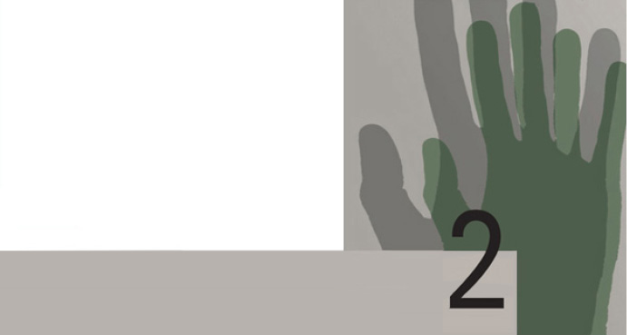
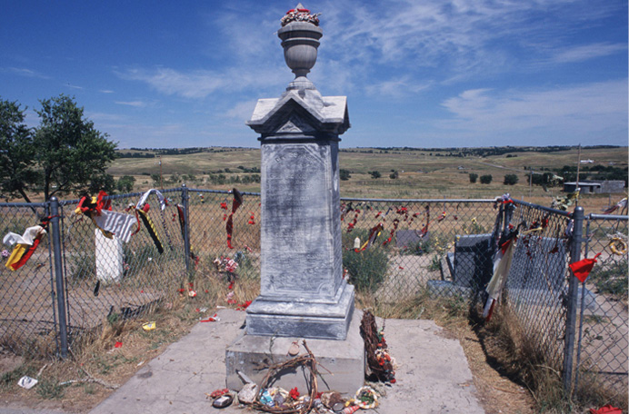
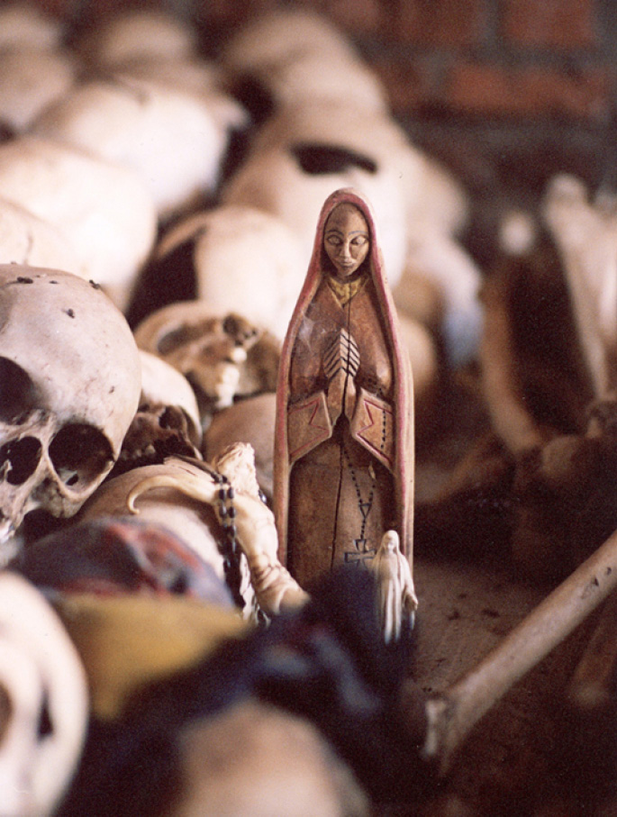

הגדרות וטיפולוגיות לתופעת הג'נוסייד
בשל המודעות הגוברת לתופעת הג'נוסייד, שנבעה בין השאר מקבלת אמנת האו"ם ומקשיי יישומה, העלו חוקרים שונים במרוצת השנים הגדרות חלופיות והציעו טיפולוגיות, שכמה מהן נפרט להלן.
טיפולוגיה (typology) היא בהכללה חקר הטיפוסים וסיווגם. היא מאפשרת לסווג את נושא המחקר, במקרה זה הג'נוסייד, לקבוצות ולתת-קבוצות ולבחון מקרים שאפשר להשוות ביניהם על בסיס מסוים.
ההגדרות והטיפולוגיות שבהן נעסוק הן כלים הנחוצים לחוקרים המבקשים לקבץ תופעות שיש ביניהן דמיון בכמה היבטים. החוקרים מבקשים לחקור את המצבים והתנאים שבהם התרחשו אירועים דומים, ומגמתם לנסות ולראות אם אפשר להכליל טענות מסוימות בנוגע לתהליך שהוביל אליהם ולבחון את המשמעויות הנובעות מכך. אין ספק שחלק ניכר מן האנשים העוסקים בחקר הג'נוסייד ובהוראתו שואפים שעיסוקם יתרום תרומה, ולו צנועה, למניעת התופעה או לפחות לצמצומה בעתיד. לפיכך, כפי שנראה במהלך הקורס, חלק מהם גם עוסק בפיתוח תיאוריות בדבר אזהרה מוקדמת מפני מקרי ג'נוסייד עתידיים אפשריים ודרכי מניעתם.
היכרות מעמיקה עם תופעת הג'נוסייד מלמדת שהיא אינה מתרחשת לפתע ובלא קיומם של נסיבות ותנאים מקדימים, וכן רקע חברתי, תרבותי, פוליטי ורעיוני המאפשרים אותה. היכרות עמהם יכולה לסייע באבחון התופעה, במאבק נגדה ואולי במניעתה או לפחות בצמצומה.
בפרק זה נציג כמה הגדרות חלופיות מרכזיות לג'נוסייד, וכן טיפולוגיות ותיאוריות על ג'נוסייד ונציע את ההגדרה שנשתמש בה במהלך הקורס. כמו כן נציג טיפולוגיות של מבצעי ג'נוסייד ושל קורבנותיו ונעסוק בתופעת ההכחשה.
הקשרים חברתיים ותרבותיים שבהם יכול להתרחש ג'נוסייד: מונחים והגדרות
תחילה נציג בקצרה הגדרות לכמה מושגים הנוגעים לרצח עם — בין ישירות ובין בעקיפין — שתסייענה לנו בהבנת התהליכים הקשורים לרצח עם ואולי אף בהבנת גורמיו. לצורך זה הסתייענו בהגדרות המופיעות בספר סוציולוגיה מאת ג'ון ג' משוניס.1 המושגים שנגדיר עשויים לסייע לנו להבין את ההקשרים החברתיים-התרבותיים, שבהם יכולים להתפתח — אם יתקיימו כמה תנאים נוספים — מעשי ג'נוסייד. ההגדרות שלהלן מקצתן מצוטטות מהטקסט של משוניס ומקצתן הן תמצית הדברים המופיעים בטקסט.
גזע: קבוצת אנשים בעלי תכונות ביולוגיות תורשתיות משותפות, שבני אדם מייחסים להן חשיבות חברתית. אנשים נוהגים לסווג זה את זה לגזעים על פי תכונות פיזיות, כגון צבע עור, תווי פנים, סוג שיער ומבנה גוף.
ההבדלים הגזעיים התפתחו בימי אבותינו הקדומים עקב מגוריהם באזורים גיאוגרפיים שונים בעולם. כך, למשל, באזורים חמים במיוחד פיתחו בני האדם עור כהה (באמצעות פיגמנט טבעי בשם מלנין), המעניק הגנה טובה מפני השמש. באזורים בעלי אקלים מתון יש לבני אדם עור בהיר. אך הבדלים אלה שטחיים בלבד: כל בני האדם, יהיה גזעם אשר יהיה, שייכים למין ביולוגי אחד.
ביולוגים במאה ה-91 חילקו את העולם לשלוש קבוצות גזעיות עיקריות: קווקזים — אנשים בעלי עור בהיר ושיער רך, נגרואידים — אנשים בעלי עור כהה ושיער מקורזל, ומונגולואידים — אנשים בעלי עור צהבהב או חום ועיניים מלוכסנות. חלוקה זו מטעה במקרה הטוב, שכן אין בעולם חברה שחבריה טהורים מבחינה ביולוגית. רב-גוניות זו היא תוצאה של תנועות הגירה ונישואי תערובת במהלך ההיסטוריה האנושית. תכונות גנטיות רבות, שהיו נפוצות בעבר במקום אחד בלבד, מופיעות אפוא כיום ברחבי העולם כולו.
אתניות ולאום: אתניות היא מורשת תרבותית משותפת. חברי קבוצה אתנית שותפים למוצא, לשפה או לדת המעניקים להם זהות חברתית מובחנת. לאומיות נתפסת בדרך כלל כקשורה לריבונות, למדינה או למאבק למענה, ואילו אתניות קשורה יותר למורשת התרבותית ולעבר היסטורי. לא תמיד ההבחנה בין שני המושגים ברורה.
לעומת זה, גזע ואתניות הם שני מושגים שונים למדי — האחד ביולוגי והאחר תרבותי — אך שניהם הולכים לעתים שלובי זרוע. עם זה, האתניות נושאת אופי משתנה ומורכב יותר מן המוצא הגזעי, שכן יש אנשים הרואים את עצמם כבעלי יותר מזהות אתנית אחת. אנשים יכולים גם לשנות ביודעין את זהותם האתנית.
ראוי לשים לב שאנשים מרבים להחליף בין "גזע" לבין "אתניות" ו"לאום" ולעשות במונחים אלה שימוש לא מדויק.
מיעוט: קבוצת אנשים בעלי אפיונים פיזיים או תרבותיים מיוחדים להם, המקופחים מבחינה חברתית. במילים אחרות, המיעוטים נבדלים מן הרוב השולט ומעמדם בחברה נחות. באחרונה הורחבה הגדרת המיעוט ועתה היא כוללת גם אנשים בעלי מגבלות פיזיות מסוימות, ויש האומרים גם נשים. אף שהמילה מיעוט מצביעה על קבוצה קטנה בתוך קבוצה גדולה, אין הדברים תמיד כך. בהקשר זה אפשר להבחין בין "מיעוט מספרי" ל"מיעוט סוציולוגי". לדוגמה, בדרום אפריקה נחשבו השחורים למיעוט שקופח בידי השלטון הלבן, אף שמספרם עלה על מספרם של הלבנים עשרת מונים. הנשים במדינות רבות הן יותר ממחצית האוכלוסייה ואף על פי כן עליהן להיאבק להשגת ההזדמנויות וזכויות היתר שמהן נהנים הגברים.
דעה קדומה: הכללה נוקשה ולא-רציונלית על קבוצת אנשים. הכללה זו נקבעה מראש ומיושמת בלא הבחנה, באורח לא גמיש ותוך התעלמות מן העובדות, על קבוצת אנשים, בין שמדובר במעמד חברתי, במגדר (ג'נדר), בנטייה מינית, בגיל, בזיקה פוליטית, בגזע או באתניות. מאחר שבכל תרבות טבועות דעות קדומות, בין חיוביות ובין שליליות, אין אדם המשוחרר מהן לחלוטין. טווח הדעות הקדומות השליליות נע בין סלידה קלה לעוינות גלויה כלפי אותה קבוצת אנשים.
תיאוריות המסבירות דעות קדומות: אם נניח כי דעות קדומות אינן משקפות ראייה רציונלית של המציאות, מה הוא בכל זאת מקורן? נזכיר בקצרה הסברים אחדים:
תיאוריית השעיר לעזאזל, לדוגמה, גורסת כי דעות קדומות נובעות מתסכול. אדם מתוסכל ינסה להשליך את מצבו על גורמים חיצוניים חלשים ממנו. מן הסתם, אין בכך כדי לתרום לשיפור מצבו של המתוסכל, למעט שחרור לחץ. תיאוריה אחרת הנוגעת אף היא לפרט, גורסת כי אנשים בעלי אישיות סמכותית הרואים בחברה מערכת תחרותית והייררכית שהחזק שורד בה, נוטים להצמיד דעות קדומות לחלשים מהם. תיאוריה נוספת מציעה כי הדעות הקדומות הן מאפיין הקיים בכל תרבות, ואיש אינו משוחרר מהן לחלוטין. התיאוריה האחרונה שנזכיר היא תיאוריית הקונפליקט: אנשים רבי עוצמה נוטים לייצר דעות קדומות ולנצלן כדי לדכא מיעוטים בעולם של קונפליקטים.
סטראוטיפים: תיאור מוגזם האמור לחול על כל האנשים השייכים לקבוצה מסוימת, הנובע ממספר רב של דעות קדומות מגובשות. הסטראוטיפים מעוותים את המציאות עיוות של ממש וקשה למגר אותם לפעמים אפילו לנוכח עובדות מוצקות.
גזענות: סוג של דעה קדומה שהיא האמונה כי קבוצה גזעית מסוימת עולה מטבע ברייתה על קבוצות גזעיות אחרות או נחותה מהן. הגזענות מלווה את האנושות מראשית ההיסטוריה והייתה עילה לקיפוחם החברתי של בני גזעים שנחשבו נחותים. יתרה מזו, לא אחת סיפקה הגזענות עילה לכיבושים אכזריים ודיכוי של עמים שנחשבו לבני גזע נחות ואף לתת-אנושיים. אפשר להבחין בין ביטויים שונים של גזענות: א) גזענות כסוג של דעה קדומה; ב) גזענות כסוג של התנהגות; ג) גזענות כאידיאולוגיה (תורת הגזע).
במאה ה-02 מילאה הגזענות תפקיד מכריע בתורה הנאצית שראתה בגזע הארי גזע עליון שנועד לשלוט בעולם. אידיאולוגיה זו הביאה את הנאצים לידי רצח שיטתי של כל בן גזע שנחשב בעיניהם נחות או פגום.
אפליה: אפליה היא ההשתקפות המעשית של דעות קדומות, סטראוטיפים וגזענות. אפליה היא כל מעשה שיש בו משום התייחסות לא שוויונית לקבוצות שונות של אנשים. אפליה היא התנהגות בפועל, ואילו דעות קדומות הן סוג של עמדות. כמו דעות קדומות או סטראוטיפים אפליה יכולה להיות מתונה או גסה ובוטה. אפליה יכולה להיות חיובית או שלילית; אנו יכולים לפעמים להעדיף או להפלות לטובה מישהו בשל היותו בן קבוצה מסוימת, מה שמביא בהכרח לידי אפליה של מי שאינו בן הקבוצה המופלית לטובה. בעצם, כולנו מפלים בין האנשים הסובבים אותנו. אפליה גזענית או אתנית שונה מהבחנה לשם בחירה (לדוגמה, אדם הנבחר לתפקיד מסוים בין מועמדים רבים), החיונית לחיי היום-יום ולרוב אינה מעלה בעיות. אפשר לומר כי חברות שונות רואות צורות מסוימות של אפליה בעין יפה, ואילו צורות אחרות הן פסולות. בארצות שתושביהן מעוטי הכנסה, האפליה לטובת המשפחה וקבוצת השייכות הראשונית (השבט) היא צפויה ואף מקובלת על החברה. במדינות מתועשות שבהן הופנם רעיון הישגיות היחיד ורעיון השייכות נדחה, אפליה מסוג זה נחשבת פסולה.
קיים גם הבדל בין אפליה בהתנהגות ובמעשים של פרטים, שהיא כאמור נפוצה מאוד, לבין אפליה חוקתית, הנותנת לגיטימציה למעשי האפליה ואינה מנסה להיאבק בהם.
דעה קדומה מוסדית ואפליה מוסדית: כאשר האפליה והדעה הקדומה אינן נחלת הפרט בלבד, כי אם נעשות בידי מוסדות נגרמת תופעה מזיקה במיוחד, שעיקרה הטיות במחשבה או במעשה הטבועות בעצם פעולתם של מוסדות החברה.
דעות קדומות ואפליה: דעות קדומות ואפליה מעודדות זו את זו ויוצרות פעמים רבות מעגל קסמים שקשה או בלתי אפשרי לצאת ממנו. כאשר יוצרים דעה קדומה בנוגע לקבוצת אנשים מסוימת ומפלים אותה לרעה על סמך דעה זו, הופכים אותה לנחותה חברתית. נחיתותה החברתית מנציחה את הדעה הקדומה עליה, מה שמוביל לאפליה וחוזר חלילה.
דמוניזציה: תפיסת "האחר" כאיום היא תהליך המתרחש בדרך כלל (אם כי בפירוש לא תמיד) בעת מלחמה, כאשר כל צד מנסה להראות כי הצד האחר אינו אנושי והוא מאיים, וזאת כדי להצדיק את המלחמה. כך, בעת מלחמת העולם השנייה התייחסו האמריקנים ליפנים כאל קופים נטולי רגשות ומוסר, אכזריים ופראים, המאיימים לא רק על אסיה ועל ארצות הברית כי אם על התרבות המערבית כולה.
דמוניזציה לא נעשית תמיד רק כלפי גורם חיצוני, אלא לפעמים כלפי קבוצה פנימית. דוגמאות לכך הן יחס הנאצים אל היהודים כתת-אנושיים וכאיום על הגזע הארי ועל התרבות הגרמנית. דוגמה נוספת היא התווית שהצמידו הטורקים הצעירים לארמנים כמי שהם נצלנים, אנטי-פטריוטים, בוגדים ומשתפי פעולה עם האויב הרוסי ועל כן יש לרצוח אותם. לדמוניזציה ולדה-הומניזציה (שלילת האנושיות) שמנהיגה האליטה השלטונית יש לעתים קשר ישיר לביצוע רצח עם. במשטרים טוטליטריים הדמוניזציה וראיית האחר כאיום היא כלי עזר ביד השלטון למחיקת קבוצה המפריעה לאינטרסים שלו.
בידול (סגרגציה): הפרדה פיזית וחברתית בין קבוצות של אנשים. לעתים הפרדה זו נעשית מרצון, אך ברוב המקרים היא נכפית על מיעוטים. בידול כדוגמת זה שהיה נהוג בדרום אפריקה נגע לכל תחומי החיים ודן את המיעוט (מיעוט סוציולוגי במקרה זה) לאזרחות מדרגה שנייה. דוגמאות אחרות הן מעמדם של היהודים בגרמניה הנאצית בשנות השלושים של המאה ה-02, והבידול בין ההוטו לטוטסי בעת הג'נוסייד ברואנדה. יש מקרים שבהם הבידול כוללני פחות ואינו נוגע לכל תחומי החיים. חשוב לזכור, כי דעות קדומות, אפליה, בידול וגזענות הן כמובן תופעות שיש לשלול אותן, אך לא כל גזענות מביאה לידי רצח עם ולא כל בידול מביא לידי רצח עם.
הבחנה בין ג'נוסייד למעשי השמדה אחרים: מונחים והגדרות
מן הראוי להזכיר בקצרה עוד כמה מונחים העולים לעתים בעת שדנים בנושא הג'נוסייד, אך הם אינם זהים למונח ג'נוסייד ויש להבחין ביניהם.
מעשי טבח בעלי אופי של ג'נוסייד (genocidal massacres): מעשי הרג המוני יכולים להיות בעלי אופי של ג'נוסייד אף שאינם ג'נוסייד על פי הגדרת האו"ם במשמעותה הצרה. אחת הדוגמאות שמביאים לעתים למעשים כאלה היא מעשי הטבח המתרחשים באלג'יריה מתחילת שנות התשעים של המאה ה-02.
רצח המוני (mass murder): רצח בלא הבחנה של קבוצת אנשים גדולה בידי הממשל. ברור כי במשמעותו הוא חופף למונחים רצח עם ופוליטיסייד, אך אפשר לכלול בו גם מקרי רצח של אזרחים, כגון מעשי התגמול של הגרמנים על פעולות של פרטיזנים ביוגוסלביה במלחמת העולם השנייה, הפצצת הירושימה, הרס ננקינג בידי היפנים.
מעשי טבח (massacres): הריגה מכוונת של אנשים בשל שייכותם לקבוצה מסוימת. בדרך כלל, מעשי הטבח הם "נקודתיים". לדוגמה, תושבי כפר אחד ייפגעו, ואילו תושבי כפר אחר בעלי אותם מאפיינים לא ייפגעו.
פוגרום (pogrom): מילה רוסית לטבח הכרוך, בין השאר, בהרס רכוש הקורבן והמבוצע, בדרך כלל, בשיתוף פעולה עם השלטון או בהסכמתו. המילה משמשת בשפת היידיש לתיאור מעשי הטבח שנעשו ביהודי רוסיה בשנים 1881-1291. בתקופה זו אפשר לזהות שלוש נקודות זמן שבהן הייתה עלייה דרמטית במעשי פוגרום, והאחרונה תואמת את תקופת המהפכה (7191-1291).
טיהור אתני (ethnic cleansing): הוצאתה בכוח ובצורה מכוונת ושיטתית של קבוצה אתנית מסוימת משטח מסוים. הקבוצה שאותה מוציאים מהשטח נחשבת ללא רצויה ואף למזיקה לקבוצה השלטת באותו השטח. יש המציעים להשתמש במונח טיהור אוכלוסיות, הכולל לא רק קבוצות אתניות כי אם קבוצות המוגדרות על ידי דת, גזע, מעמד, נטיות פוליטיות או נטיות מיניות. אף שהמונח טיהור אתני נטבע אך באחרונה, אפשר לומר כי מעשים העונים להגדרה בוצעו מימי העת העתיקה. הדוגמה המודרנית הבולטת היא הטיהור האתני בבוסניה-הרצגובינה שהתרחש בשנים 2991-5991, שבו השתמשו הבוסנים הסרבים באמצעים אלימים ולא אלימים כדי להוציא בכוח את הבוסנים המוסלמים משטח סרביה; מאז השתרש המושג. לעתים נעשה הטיהור האתני בדרך של גירוש כפוי, טרנספר, ולעתים הוא מלווה במעשי טרור, טבח ואף במעשי רצח המוניים. טיהור אתני מוגדר במשפט הבין-לאומי כפשע נגד האנושות.
אתנוסייד (ethnocide): הרס של זהות הקבוצה בלי השמדת חבריה. לשון אחר, אתנוסייד הוא השמדת קבוצה אתנית שלא באמצעים פיזיים. לעתים משתמשים לתיאור מעשים אלו במושג "ג'נוסייד תרבותי". לדוגמה, יש הטוענים שמה שמחוללים הסינים לטיבטים אינו ג'נוסייד אלא אתנוסייד (ראו הספר על טיבט בסדרת ספרי הקורס).
אומניסייד (omnicide): מלחמה גרעינית כוללת העלולה להרוס את האנושות כולה. המונח היה נפוץ בתקופת המלחמה הקרה.
הומיסייד (homicide): רצח בן אדם.
מעשי ההשמדה המוגדרים לעיל אינם בחזקת ג'נוסייד על פי ההגדרה, אף כי הם יכולים להיות מרכיב במעשה של ג'נוסייד. ההבדל ביניהם אינו רק כמותי — במעשי טבח המוניים, בפוגרומים ובמעשי טבח יכולים להירצח אנשים רבים — אלא גם בכוונה: אם הכוונה היא להשמיד קבוצה או רק לפגוע בחלק מחבריה. לדוגמה, רצח של חלק מאוכלוסיית כפר או אף רצח כל אוכלוסיית הכפר, אבל אי-פגיעה בכפרים סמוכים לא יוגדר כג'נוסייד. עם זה, יש לשוב ולהזכיר שקיימים מקרים שמקצת החוקרים יגדירו כג'נוסייד ואחרים יטענו שאין הדבר כך.
בהמשך הספר נסקור בהרחבה שני מושגים רלוונטיים ביותר: פוליטיסייד ודמוסייד.
טיפולוגיות ותיאוריות על ג'נוסייד
המקורות והמשמעויות של תופעת הג'נוסייד עדיין בעייתיים ולא ברורים דיים. להלן נציג בקצרה כמה גישות של חוקרים בולטים, שעסקו בעשורים האחרונים בחקר תופעת הג'נוסייד וניסו להציע לה הגדרות מחקריות, סיווגים ופיתוח חשיבה תיאורטית שתסייע בהבנת התופעה.2
בשנת 9591 פרסם הפרופסור למשפטים מהולנד פיטר דרוסט (Pieter N. Drost) מחקר מקיף בנושא הג'נוסייד, The Crime of State,3 ובו הצביע על תופעת הג'נוסייד כחלק מן ההיסטוריה האנושית. הוא מתח ביקורת על השמטת "הקבוצה הפוליטית וקבוצות אחרות" מהגדרת האו"ם. לדעתו, מדינות שונות עשויות לנצל את החסר הזה. הוא הציע שהעצרת הכללית של האו"ם תגדיר רצח עם הגדרה חדשה: "השמדה פיזית מכוונת של בני אדם בגין השתייכותם לקבוצה אנושית מסוימת כלשהי".
גם החוקר הצרפתי הרווה סאווֹן (Hervé Savon), בספרו מקניבליזם לג'נוסייד (Du cannibalisme au genocide),4 מתח ביקורת על הגדרת האו"ם. סאוון הציע לסווג את רצח העם לפי תוצאותיו, דהיינו, סוגים שונים של רצח עם: החלפה, חורבן, השמדה (genocides of substitution, devastation, and elimination). אמנם, סאוון הסב שוב את תשומת הלב לבעייתיות של הגדרת המונח, אך יש לציין, כי אין בהצעתו התייחסות לאירועים שהובילו לרצח עם.
אירווינג לואיס הורוביץ (Irving Louis Horowitz), סוציולוג ואיש מדע המדינה, אמריקני-יהודי, עוסק משנות השבעים בחקר תופעת הג'נוסייד ובפרסומה. אף הוא התמודד עם סוגיית הגדרת המונח, בין השאר בספרו נטילת חיים: ג'נוסייד וכוח המדינה (Taking Lives: Genocide and State Power).5 כפי שעולה מכותרת הספר, הורוביץ רואה ברצח עם תוצאה של מדיניות שנועדה ליצור עמדה קונפורמית מתואמת עם האידיאולוגיה של המדינה. הוא מגדיר רצח עם כהרג מובנה ושיטתי של אנשים חפים מפשע באמצעות הכלים הביורוקרטיים של המדינה.
בפירושו למונח רצח עם מדגיש הורוביץ את אופיין של החברות שבהן הוא התרחש או מתרחש. להערכתו, רצח עם אינו התרחשות אקראית או ספורדית, כי אם סוג ייחודי של השמדה המונית הדורש, בעצם, את אישור המדינה. הממשל מצדו משתמש ברצח עם ככלי ליצירת סולידריות לאומית שתקל עליו להיפטר מקבוצות לא רצויות. על פי התיאוריה שלו, קיים רצף של חברות וממשלים שבקצהו האחד מצויות חברות מתירניות, במרכזו חברות ליברליות יותר ומדכאות פחות ובקצהו האחר חברות הנוטות לבצע רצח עם. במסגרת הניתוח המדעי בגישה המקרו-חברתית, שאותה מציע הורוביץ, הוא מציין שמונה סוגים של חברות, ואלה הם:
- חברות בעלות נטיות לביצוע רצח עם (genocidal societies): הממשל נוטל את חייהם של אנשים הנחשבים לסוטים מהנורמה או מי שהתנהגותם מתריסה נגדה.
- חברות הנוטות לכלוא או לגרש: הממשל מונע מפרטים מסוימים מגע עם שאר החברה או מבצע סילוק פיזי שלהם.
- חברות הנוטות לבצע עינויים: חברות שבהן יש תופעות קבועות של פגיעה פיזית בפרטים מסוימים לפני הוצאתם להורג במגמה להציגם לעיני כלל החברה כעדות לגורלו של אדם הסוטה מהנורמה.
- חברות טורדניות: הממשל נוטה לבצע מעצרים רבים, חיפושים והטרדות של פרטים באוכלוסייה.
- חברות הנוטות להפעיל רגשות בושה: הפעלת לחץ חברתי משותף, כדי לגרום לפרטים מסוימים באוכלוסייה להרגיש בושה ונידוי.
- חברות הנוטות להפעיל רגשות אשם: טיפוח רגש אשמה, שאותו מפנים הפרט כתוצאה של לחץ חברתי.
- חברות סובלניות: הנורמות ברורות לכול; אין מעודדים סטייה מהן, אך אם יש סטייה כזו אין היא גורמת להרס הפרט.
- חברות מתירניות: החברה מציבה שאלות בנוגע לנורמות, ובעצם, הקהילה ולא הממשל היא הגורם הקובע מה נורמטיבי ומה לא נורמטיבי.
לדעת הורוביץ, מעשים של רצח עם או מעשי טבח המוניים עשויים להתבצע בשלושת הסוגים הראשונים של החברות. בחמישה סוגי החברות האחרים לא יתבצע, קרוב לוודאי, רצח עם.
האם תיתכנה חברות שהן בעת ובעונה אחת מתירניות להפליא כלפי סטיות מסוימות מהנורמה ודכאניות להדהים כלפי סטיות אחרות?
במאמר שכתב בשנת 4891, "ג'נוסייד וכינונה מחדש של תיאוריה חברתית" (Genocide and the Reconstruction of Social Theory),6 מציין הורוביץ שחברה טוטליטרית הייתה תנאי מקדים אם כי לא מספיק להתרחשות תהליך של רצח עם. בשונה ממה שסבר בעבר, הוא טוען במאמרו כי התרבות הלאומית ממלאת תפקיד חשוב יותר מתפקידה של האידיאולוגיה בהתרחשותו של הג'נוסייד.
החוקר האמריקני ממוצא ארמני והאקן דדריאן (Vahakn Dadrian), במאמרו "טיפולוגיה של ג'נוסייד" ("A Typology of Genocide"), מציע אף הוא, לצורכי מחקר וניתוח מדעי, הגדרה חדשה לג'נוסייד, שבה, בעקבות למקין, הוא מדגיש את כוונת המבצע. הוא הציע בשנת 5791 את ההגדרה הזאת:
ג'נוסייד הוא ניסיון מוצלח של קבוצה שלטת בעלת סמכות רשמית או יתרון בגישה למקורות הכוח, לצמצם בכפייה או באלימות קטלנית את מספרם של בני קבוצת המיעוט שהשמדתה נתפסת כרצויה וכמועילה [למשמידים] ופגיעותה היא גורם עיקרי בהחלטה לבצע את הג'נוסייד.7
פרשנותו של דדריאן למונח רצח עם מדגישה את סוג הפער הקיים בין המבצע לקורבן ואת דרגתו. כך נוצרים חמישה סוגים של רצח עם:
- רצח עם תרבותי: מטרת המבצע היא הטמעה תרבותית של הקורבן.
- רצח עם כמוס: מבוצע בעקיפין ואף באופן לא מודע, כדוגמת מוות של אזרחים תמימים בעקבות הפצצה או בשל הפצה לא מכוונת של מגפות בזמן פלישה.
- רצח עם תגמולי: מבוצע לצורך הענשה של חלק מקבוצת מיעוט המאיימת על הקבוצה השלטת.
- רצח עם תועלתי: שימוש ברצח המוני להשגת שליטה במקורות כלכליים או לשמירה עליהם.
- רצח עם מוחלט: מטרת המבצע היא להשמיד כליל קבוצה שלמה. הדוגמאות לכך לדעתו הן השואה ורצח העם הארמני.
מהחלוקה הזאת לסוגים של רצח עם אפשר לראות כי דדריאן כולל בהם ג'נוסייד תרבותי (אתנוסייד), הוא אינו מבחין בין מעשי השמדה מכוונים למעשים שאינם מכוונים והוא מתמקד בעצם במבצעים.
הסוציולוגית הלן פיין (Helen Fein) הדגישה בעבודותיה החל בסוף שנות השבעים,8 כי האידיאולוגיה (והמיתוס הקשור אליה) היא מרכיב מרכזי במכניזם של הג'נוסייד. בכך תרמה פיין תרומה של ממש למחשבה התיאורטית להבנת התופעה. בעבור פיין רצח עם הוא אירוע "רציונלי", מתוכנן ובעל מטרות מוגדרות. לדעתה, "הנוסחה" השלטונית שהתפתחה במשטרים אחדים במאה ה-02 הצדיקה ביעור אלמנטים שונים בחברה העלולים לפגוע בלגיטימציה של השלטון. ביעור זה נעשה על ידי התבוללות, גירוש או השמדה.
פיין הציעה פירוש ראשוני וטיפולוגיה למונח רצח עם, במסגרת הצעותיה השונות למניעתו. היא גורסת, כי "רצח עם הוא רצח מחושב של קבוצה או של חלק מקבוצה שהמבצע הגדירה כקבוצה הנתונה מחוץ למרחב ההתחייבויות שלו. בדרך כלל נעשה הרצח בידי ממשלה, האליטה או ההמון המייצגים את המבצע, וזאת בתגובה על משבר שנגרם לדעת המבצע בידי הקורבן, או הזדמנות שהוחמצה, לדעתו, בגלל הקורבן".
פיין מחלקת את רצח העם לארבעה סוגים:
- התפתחותי: המבצע משמיד במודע או לא במודע אנשים המונעים אותו מלנצל את המשאבים הכלכליים.
- רודני: נועד למחוק אופוזיציה אמיתית או פוטנציאלית, במדינה רב-אתנית שבה קיים קיטוב קיצוני.
- נקמני: המבצע מבקש להשמיד מתנגד קיים.
- אידיאולוגי: אפשר לכלול בו את כל המקרים שבהם בוצע רצח עם בקבוצות שגילמו בעיני המבצע את תמצית הרוע, או בקבוצות שנתפסו באופן מיתולוגי כאויבי המבצע.
לאחר שנים אחדות עדכנה פיין את פרשנותה והגדירה את המונח מנקודת מבט סוציולוגית.9 היא הגדירה רצח עם כסדרה של מעשים מכוונים שנוקט מבצע או מבצעים כדי להרוס קבוצה מסוימת. מעשים אלו עשויים להיות רצח המוני או סלקטיבי ודיכוי של ההמשכיות הביולוגית והחברתית של אותה קבוצה הנעשה בדרכים שונות, כגון מניעה או הגבלה כפויה של הילודה בקרב חברי הקבוצה, העלאת התפוצה של תמותת תינוקות וכן ניתוק ילדים ממשפחתם או מקבוצתם המקורית. המבצע יכול להיות מדינת הקורבן, מדינה אחרת או קבוצה אחרת.
פיין עומדת על כך, שמבצעי רצח העם עשויים להיות לא רק מדינות או רשויות כלשהן, אלא גם מתיישבים פרטיים. לדוגמה, הרג האוכלוסייה המקומית בברזיל ובפרגוואי בידי מתיישבים שהתרחש באמצע המאה ה-02.
פיין פיתחה תיאוריה המסבירה את רצח היהודים, הארמנים והצוענים, תוך שהיא מציינת גם את ההבדלים בין המקרים. לדבריה, מבחינה היסטורית היו הקבוצות האלה נתונות להתקפה מתמשכת. היהודים נרדפו בצורות שונות במשך כ-000,2 שנה; הארמנים נרדפו במשך 005 שנה, מתחילת השלטון העות'מאני בטורקיה; והצוענים נרדפו כמעט 000,1 שנה. בהקשר זה מתארת פיין את התהליך שהוביל להוצאת קבוצות אלו ואחרות מתחום האחריות או "מחוץ ליקום המקודש". נסקור בקצרה את ניתוחה בנוגע למעשי רצח עם בשלוש הקבוצות הללו.
הארמנים כונו בידי הטורקים המוסלמים כופרים ואף תוארו ככבשים. הם זכו להגנה פיזית כל עוד השלימו בצייתנות עם נחיתותם, אפלייתם ודיכויים. אצל "הטורקים הצעירים", שניסו לפני מלחמת העולם הראשונה ובעת המלחמה לבסס את שלטונם וליצור זהות טורקית חדשה, לא היה מקום למיעוט כה גדול העלול לסכן את הלגיטימציה שלהם.
רצח היהודים והצוענים מתאים אף הוא, לדעתה, לחשיבות המרכיב האידיאולוגי בג'נוסייד. הנאציזם השתמש באידיאולוגיה פסבדו-מדעית, נאו-דרוויניסטית וגזענית, שסיווגה את העם הגרמני הארי כבעל זהות ייחודית ועתיד ייחודי. זהות זו נקבעה באמצעות "דם". בסכימה האידיאולוגית הנאצית הייתה לגזע הארי זכות משיחית לשלוט בעמים אחרים וכל האמצעים היו כשרים להשגת המטרה. אידיאולוגיה כזו, המבוססת על גזענות, היא תנאי מקדים לקיומו של רצח עם. כיוון שהיהודים והצוענים (ואף ההומוסקסואלים — מסיבות אחרות) לא השתייכו לקבוצת הזהות הראויה, הם היו מחוץ לתחום אחריותה של גרמניה ואף מחוץ לספירה האנושית בכלל. הם הוצגו כחיות מזיקות, מעוותות מבחינה גנטית וכמסכנות את טהרתה ושלמותה של הקבוצה הארית. פיין מדגישה, כי בעת שנעשה שימוש בדוקטרינה המסווגת את הקורבן כמי שנמצא מחוץ לספירה האנושית, אין עוד הגבלות או עכבות בכל הנוגע למה שאפשר לבצע בו.
ליאו קופר (Leo Kuper), אחד מחלוצי חקר הג'נוסייד ומעצביו, בספרו ג'נוסייד: שימושו הפוליטי במאה ה-02 (Genocide: Its Political Use in the Twentieth Century), מציע ניתוח מקיף של התהליך והמניעים של תופעת הג'נוסייד. ניתוחו של קופר לרצח עם בתקופה המודרנית מסווג את מניעי המבצע בשלוש קטגוריות:
- רצח עם שנועד לפתור חילוקי דעות דתיים, אתניים או גזעיים.
- רצח עם שנועד לטעת פחד בקרב עם או עמים שנכבשו.
- רצח עם שבוצע כדי לממש אידיאולוגיה פוליטית.10
קופר מודאג בייחוד מהתפשטות תופעת רצח העם בתקופה המודרנית. כיוון שלדעתו התופעה נוטה להתרחש בעיקר במדינות לאום בעלות מאפיינים של חברה רב-אתנית, מוקדש חלק חשוב מניתוחו להיווצרותן של מדינות לאום חדשות בעלות חברות רב-אתניות בתקופת הקולוניזציה ובתקופת הדה-קולוניזציה שאחריה. קופר אינו מתעלם בפרשנותו מקבוצות פוליטיות וטוען, כי יש לכנות התרחשויות כמו הרציחות ההמוניות של סטלין, הרציחות באינדונזיה והרציחות בקמבודיה כמעשים של רצח עם. ראוי לשים לב, שבחלק גדול מההתרחשויות הללו מדובר גם ברצח עם במובן האתני. לדוגמה, סטלין גירש וחיסל גם עמים וקבוצות אתניות שנתפסו בעיניו בעייתיים מבחינה פוליטית. (אחד הספרים בקורס זה עוסק בטיהורים האתניים שביצע סטלין.)
בספר משנת 5891, מניעת הג'נוסייד (The Prevention of Genocide),11 מציע קופר להקים מנגנון בין-לאומי שיפעל נגד מבצעי רצח עם לפני ביצועו או בזמן ביצועו, במטרה להפסיקו או למנעו כליל. הוא מודע לעובדה שמשחק האינטרסים והערכים של המדינות השונות יש בו משום מכשול חשוב המונע את יישומה של אמנת האו"ם.
לאחר זמן שינה קופר את הטיפולוגיה שלו והרחיב את פרשנותו. הוא חילק את תופעת הג'נוסייד לשתי קבוצות עיקריות:
- רצח עם פנימי המבוצע בעקבות פערים ושסעים בתוך החברה עצמה; סוג זה כולל ארבע תת-חלוקות:
- רצח של בני המקום, ובכללם חברות ציידים ומלקטים, שנעשה למען אינטרסים של פיתוח כלכלי גם בימינו (לדוגמה, האינדיאנים האפשים בפרגוואי).
- רצח בעקבות דה-קולוניזציה, לאחר שנשתנו רוב מבני השליטה (לדוגמה, מעשי הג'נוסייד שביצעו ההוטו והטוטסי ברואנדה ובבורונדי).
- רצח בעקבות מאבק כוחות בין קבוצות אתניות, גזעיות או אחרות בעת החלפת שלטון או בעת ניסיון להשיג עצמאות או שוויון זכויות (לדוגמה, בנגלדש).
- רצח של בני ערובה או של שעיר לעזאזל (לדוגמה, השמדת הארמנים במלחמת העולם הראשונה והשואה).
- רצח עם חיצוני המבוצע בעקבות מאבקים ולוחמה בין-לאומית. בקטגוריה זו כולל קופר את הפצצת הירושימה ונגסקי בידי האמריקנים, את פלישת סין לטיבט, את פלישת אינדונזיה לטימור המזרחית ואת מלחמת וייטנם.
חוץ משתי הקבוצות העיקריות האלו כולל קופר גם מעשי רצח המוניים בקבוצות פוליטיות (שהוצאו מאמנת האו"ם). הוא מציג מקרים של מעשי טבח בעלי אופי של רצח עם שבוצעו נגד מיעוטים אתניים, דתיים וגזעיים בחברות רב-אתניות הנשלטות בידי שלטון עריץ הנתמך בנוסחאות פוליטיות או באידיאולוגיה המקנה לו לגיטימציה. בקטגוריה רחבה זו נכללים מקרי הרצח ההמוני שביצעו הממשל הסובייטי, גרמניה הנאצית, אינדונזיה ועוד.
מן הראוי לשים לב, שקופר עושה סוג מסוים של השוואה בין מקרים ברורים של ג'נוסייד לבין מקרים אחרים, שרבים חולקים על הכללתם בקטגוריה זו, כגון הפצצות על העיר הגרמנית דרזדן, הטלת הפצצות האטומיות על הירושימה ועל נגסקי או המעורבות האמריקנית בווייטנם. במקרים אלו לא הייתה השמדת הגרמנים, היפנים או הווייטנמים מטרה כשלעצמה.
החוקר האמריקני-היהודי רוברט פ' מלסון (Robert F. Melson), בספר מהפכה וג'נוסייד (על מקורות הג'נוסייד הארמני והשואה),12 ניסה לזהות קווי דמיון בצד קווי שוני בין הג'נוסייד הארמני לבין השואה ולהגיע באמצעותם למסקנה תיאורטית. לדעתו, גם לרצח הארמנים וגם לשואה היהודית היו ארבעה תנאים מקדימים.
ראשית, הארמנים היו מיעוט נסבל באימפריה העות'מאנית, אך בשום פנים ואופן לא בעל מעמד שווה לרוב; במהלך ההיסטוריה נרדף מיעוט זה מדי פעם בידי הרוב וסבל מיחס מזלזל מצדו. הדבר נכון בלא ספק גם בנוגע למצבם של היהודים באירופה במרוצת מאות שנים.
שנית, בשנים שלפני הרצח נהנה המיעוט הארמני מהצלחה כלכלית, חברתית, תרבותית ופוליטית. בגלל ההצלחה והניידות החברתית נוצרו מתחים בין המיעוט לבין הרוב, שראה בכך תופעה לא-לגיטימית ואף איום על הסדר הישן שהיה מבוסס על אי-שוויון. היהודים, כידוע, שיפרו מאוד את מעמדם בגרמניה בעקבות האמנציפציה.
שלישית, המיעוט היה מקושר גיאוגרפית או אידיאולוגית עם אויבי חברת הרוב והמדינה. הזיהוי עם אויבי חברת הרוב יכול להיות אמיתי או מדומה, אבל בכל מקרה נוצר קשר בין האיום החיצוני לבין האיום הפנימי.
רביעית, חברת הרוב חוותה כמה טלטלות פוליטיות, צבאיות או כלכליות שפגעו בביטחונה, וחשה כמי שמצויה במשבר קיומי עמוק. בנסיבות אלו יכולה להיווצר תמיכה ברעיונות קיצוניים.
צירוף הגורמים האלו, טוען מלסון, מאפשר יצירת אידיאולוגיה הקושרת בין המשבר שבו מצויה המדינה או חברת הרוב לבין הניידות או ההצלחה של קבוצת המיעוט והקשרים החיצוניים שלה עם אויבי המדינה. המיעוט מואשם, כי הוא משגשג על חשבון הרוב, אחראי לאסונות הפוקדים את המדינה והחברה ומאיים איום של ממש על קיומה. בעקבות אידיאולוגיה רדיקלית זו מחליטה המדינה להגדיר מחדש את זהותה ולמחוק מן המבנה החברתי את המיעוט המאיים על קיומה.
מלסון טוען, כי הדגם שלו מתאים לרוב מקרי רצח העם הפנימיים שביצעו שלטונות של מדינות. לדעתו, תהליך פשוט יותר מתרחש במקרים שבהם מתעמת גורם כובש עם חברה מפותחת פחות ממנו מבחינה טכנולוגית, ומתחילת המגע ביניהם הוא רואה בה ישות הנתונה מחוץ לסדר החברתי והמוסרי.
החוקר האמריקני רוג'ר סמית (Roger Smith), בחיבורו משנת 7891 על רצח עם במאה ה-02, הגדיר את המאה ה-02 "עידן הג'נוסייד" ("Age of Genocide"),13 והציע לאפיין רצח עם על פי מניעיו של המבצע. לגרסתו יש חמישה סוגים של רצח עם:
- נקמני/תגמולי: רצח המבוצע כחלק מצורך בנקמה (לדוגמה, השליט המונגולי ג'ינגיס חאן כבש בתחילת המאה ה-31 שטחים נרחבים ברוסיה ובסין והשמיד לא רק את הצבאות הלוחמים אלא גם אוכלוסיות אזרחיות גדולות).
- מוסדי: מבוצע בעיקר בעת כיבוש צבאי ואופייני לעת העתיקה ולימי הביניים.
- תועלתי: מונע על ידי הדחף לצבירת נכסים (לדוגמה, ההתפשטות הקולוניאלית במאה ה-61 עד המאה ה-91 ובמקרים מסוימים גם במאה ה-02, וחיסול קבוצות של תושבים מקומיים).
- מונופוליסטי: מבוצע במגמה ליצור מונופול של השלטון בייחוד בחברות מפוצלות ורב-אתניות, כמו בבנגלדש או בבורונדי.
- אידיאולוגי: מבוצע כדי לכונן או לכפות רעיון של גאולה או היטהרות על כלל החברה (נפוץ במאה ה-02, לדוגמה הארמנים, הסובייטים, השואה, קמבודיה).
סמית מדגיש את השינוי שחל במניעים לג'נוסייד במרוצת ההיסטוריה. בעבר היו הקורבנות נבחרים בשל מקום מגוריהם או בשל רכושם, ואילו בעת החדשה הם נבחרו בגלל זהותם העצמית-החברתית (אתנית, לאומית, גזעית, דתית על פי אמנת האו"ם וקבוצות נוספות לדעת חוקרים אחרים).
חשוב לעמוד על נקודות הדמיון והשוני בהגדרות ובטיפולוגיות שמציעים החוקרים השונים, משום שהן יכולות לסייע לנו להבין את הסיבות להתרחשותם של מעשי ג'נוסייד. עם זה, חשוב לזכור שבסופו של דבר אנו דנים בגורלם של בני אדם שנרצחו בידי בני אדם אחרים על לא עוול בכפם.
פרנק צ'לק וקורט ג'ונאסון (Frank Chalk and Kurt Jonassohn) בספרם ההיסטוריה והסוציולוגיה של הג'נוסייד (The History and Sociology of Genocide)14 מציעים הבחנה בין שני מונחים: "אתנוסייד" ו"ג'נוסייד". את המונח "אתנוסייד" הם מציעים לציון השמדת קבוצה אתנית באמצעים לא פיזיים, כמו דיכוי השפה, התרבות או הדת. אתנוסייד הוא לדעתם תופעה שונה מהשמדה פיזית של קבוצה. את המונח ג'נוסייד הם מייחסים רק לפעולות של השמדה פיזית. השניים חשבו גם על יצירת מונח חלופי לג'נוסייד, שכן הם חולקים על הגדרת הג'נוסייד באמנת האו"ם. לבסוף הם החליטו לדחות אפשרות זו, גם משום שלא מצאו ניסוח חלופי מתאים וגם משום שהמונח ג'נוסייד כבר התקבל ונפוץ בשנים האחרונות בעולם. מכל מקום, לצורכי מחקרם מגדירים המחברים "רצח עם" כך: "סוג (צורה) של הרג המוני חד-צדדי, שבו הממשל או גוף אחר בעל סמכות מתכוון להשמיד קבוצה, והקבוצה עצמה והחברות בה מוגדרת בידי המבצע עצמו".15
כדי להבהיר את הגדרתם יש לנתחה מילה במילה. המילה הראשונה שיש להתייחס אליה היא סוג (צורה) של הרג המוני. מטרת המילה היא להדגיש, כי יש כמה סוגים של הרג המוני, אך ההגדרה נוגעת רק לסוג אחד מסוים: הרג המוני המכוון להשמדת קבוצה.
המונח הרג המוני מכוון לכך, שבמקרה של ג'נוסייד כל חברי הקבוצה המותקפת סומנו להריגה. העובדה, כי מבחינה היסטורית סיכוייו של התוקף להגשים את יעדו קלושים, אינה רלוונטית. הגדרה זו של הרג המוני מאפשרת להוציא מההגדרה הכללית של רצח עם את כל המקרים של הרג, רצח, טבח ומהומות הראויים בלא ספק לגינוי, אך מטרתם שונה.
המונח חד-צדדי מכוון לעובדה, שלתוקפים יש כוונה להשמיד את הקורבן, אך לקורבן אין כל תוכניות כאלה בנוגע לתוקפו. משמעות נוספת של המונח חד-צדדי היא, שאף כי ייתכן שהקבוצה המותקפת תנסה להתגונן או לצאת נגד תוקפיה, האמצעים שברשותה דלים מאוד, ומאמציה הם בעצם חסרי תקווה לחלוטין. דוגמאות לכך הן, לדעתם, מרד גטו ורשה או ההתגוננות/המרידה של הארמנים בעיר וַאן (Van) בעת הג'נוסייד הארמני, שנועדו לבסס את הסולידריות של הקורבנות וכבודם יותר מאשר להיאבק ממש במטרה לנצח.
הביטוי הרג המוני חד-צדדי חיוני כדי להוציא מהגדרת הג'נוסייד את כל מקרי ההרג בעת מלחמה, שבה המעשה אינו חד-צדדי ואף קבוצה אינה חסרת ישע. אמנם, המקרים המוגדרים כרצח עם התרחשו לא פעם לפני מלחמות, בזמנן או אחריהן, אך הקבוצה המותקפת לא הייתה צד שהשתתף במלחמה. המקרה של קרתגו מוגדר, לדעתם, כרצח עם כיוון שההרג ההמוני התרחש לאחר שהמלחמה עצמה כבר נסתיימה.
ההגדרה של רצח עם אינה כוללת, לדעתם, מקרים של הרג אזרחים בעת הפצצות, כיוון שפעולות אלה נחשבות לחלק ממלחמה, כל עוד הממשלה נוטלת צד בלחימה. השקפה זו מנוגדת להשקפתם של ז'אן פול סארטר וליאו קופר, שכללו את הפצצת הירושימה ונגסקי בהגדרת רצח העם.
רצח עם מבוצע תמיד בידי הממשל או גוף סמכותי אחר. במאה ה-02 מבצעו של רצח העם הוא תמיד הממשל, וזאת בשל ריכוזיות השלטון. המונח גוף סמכותי אחר כלול בהגדרה כיוון שהוא מאפשר הכללת גופים רשמיים, כגון שלטונות מקומיים וכדומה.
את המונח קבוצה קשה להגדיר, שכן יש לו פירושים משתנים בהתאם לנסיבות הזמן והמקום. הגדרתם של צ'לק וג'ונאסון משאירה אותו פתוח (החברוּת בקבוצה נקבעת, על פי הגדרתם, בידי המבצע עצמו), מה שמאפשר הכללת קבוצות שאינן מצוינות בהגדרת האו"ם לרצח עם. יתרה מזו, הדבר מאפשר הכללת קבוצות שאף לא נחשבו לקורבנות פוטנציאליים בהגדרת האו"ם (כגון חולי נפש והומוסקסואלים בגרמניה הנאצית, שוכני העיר בתקופת שלטונו של פול פוט בקמבודיה), או קבוצות הקיימות רק בדמיונו של התוקף (כגון המכשפות במערב אירופה בימי הביניים או "אויבי העם" בתקופתו של סטלין).
ולבסוף, המונח בכוונה תחילה מוציא מההגדרה את המקרים שבהם התבצע הרג המוני בלא כוונה תחילה (כגון הפצת מחלות קטלנית בעקבות הגירה).
צ'לק וג'ונאסון מודעים לעובדה, שהגדרתם היא הגדרה מצמצמת במובנים מסוימים. כדי שלא להתעלם לחלוטין ממקרים שאינם נכללים בה טכנית אך ראויים בכל זאת להתייחסות, הם מציעים הגדרה נפרדת — מעשי טבח בעלי אופי של ג'נוסייד (genocidal massacres); בהגדרה נפרדת זו נכללים מקרי רצח עם המשלבים אתנוסייד או מקרים שבהם התכוון התוקף להשמיד רק חלק מקבוצה.
ישראל טשרני מציע הגדרה הומניסטית למונח רצח עם. על פי הגדרתו, רצח עם הוא הרג חסר רסן של בני אנוש בשל זהותם, בין שמדובר בזהות לאומית, אתנית, גזעית, דתית, פוליטית, גיאוגרפית או אידיאולוגית. לדעת טשרני, "אין ולעולם לא תהא זהות כלשהי המצדיקה רצח של גברים, נשים או ילדים משום שהם 'אנטי' איזה 'איזם' שהוא, או משום שאפיוניהם הפיזיים הם גבוה או נמוך, בעלי אוזניים ארוכות או קצרות, או בעלי צבע ירוק או כתום".16
טשרני מעריך, כי הגדרתו ההומניסטית למונח רצח עם היא זו שתישמר לאורך זמן, וערכה יגבר אף על הניסיונות המובנים להגדיר את המונח כניסיון להשמדת זהותה של קבוצה אתנית, לאומית, דתית או אחרת. טשרני מאמין, כי הנושא החשוב הוא ערך חיי האדם. יש להגדיר רצח עם הגדרה כוללנית והיא — השמדה של קבוצה גדולה או מספר רב של אנשים בצורה מודעת ובלא צורך. לדעתו, ג'נוסייד הוא כל מקרה שבו מספר גדול של בני אדם מומתים בידי בני אדם אחרים, להוציא מקרים שיש להם הוכחה ברורה של הגנה עצמית. מעבר לליקויים של החוק הבין-לאומי, ומעבר לוויכוחים על ההגדרות בין החוקרים, זוהי ההגדרה המונחית על ידי השכל הישר.
טשרני עוסק גם בתהליך המוביל לרצח עם: רוב הגופים הרשמיים רואים כיום בהתרחשויות הקטסטרופליות המכונות רצח עם — השמדה מכוונת של פרטים רבים מתוך קבוצת מטרה מסיבה כלשהי, המוצדקת על ידי האידיאולוגיה של המבצעים. אפשר לבחון את האירועים המובילים להתרחשות רצח עם מכמה נקודות מבט, הקשורות בצורת ארגונם של חברות ולאומים, וכן בשאלה כיצד הם מחויבים לשמירה על חיי אדם או להריגתם. גם טשרני סבור, שהסלמה לקראת רצח עם מתרחשת בעיקר בהקשרים של מלחמה או לחץ על החברה. הדחיפה האחרונה לביצועו קשורה לא פעם באירועים סמליים המצדיקים, בחברה מסוימת, תפיסות שעל פיהן קבוצה כלשהי מאיימת על שרידותה של החברה. לעתים אין זה אויב אמיתי, אלא אויב כביכול שהחברה מתגייסת למאבק לחיסולו.
טשרני סבור, כי אפשר להשוות את התהליך המוביל לרצח עם למחלת הסרטן. במחלה מתרחש תהליך שבו חלק מסוים בגוף משתלט ומתחיל להרוג חלקים אחרים בו. אמנם, יש בגוף גורמים חיסוניים היכולים ללחום בסרטן, אך פעמים רבות הם אינם מצליחים בכך והוא משתולל בגוף בלא שליטה. התוצאה הסופית היא לא רק מותם של החלקים המותקפים — היא עלולה להיות גם מות האורגניזם כולו. גם בחברה יש גורמים המנסים להשתלט עליה באמצעות הרג של חלקים ממנה וגם בה יש גורמים שבאפשרותם לעצור את ההשתלטות האלימה, ואם הם אינם עושים זאת בזמן התוצאה הסופית היא הרסנית.
בהמשך להגדרתו ההומניסטית מציע טשרני "הגדרה כוללת" (generic definition):
ג'נוסייד [...] הוא הרג המוני של מספר ניכר של בני אדם, שלא במסגרת פעולה צבאית נגד כוחות צבאיים מוכרים, בתנאים שהקורבן הוא נטול הגנה ונטול עזרה באופן מהותי.17
הסוציולוג ג'ק נוסן פורטר (בן לניצולי שואה), העוסק רבות בחקר הג'נוסייד, רואה בג'נוסייד חיסול מכוון של קבוצת מיעוט כלשהי בשלמותה או בחלקה המבוצע בידי ממשלה או בידי סוכניה.18 ג'נוסייד מתבצע בהריגה פיזית המונית או בכל אמצעי אחר, כמו הרעבה, גירוש כפוי או שעבוד פוליטי, כלכלי וביולוגי. פורטר מרחיב את הגדרת הג'נוסייד לעומת הגדרתו באמנת האו"ם וטוען כי הוא השמדה מכוונת של קבוצות מיעוט פוליטיות ומיניות, נוסף על קבוצות מיעוט גזעיות, דתיות, ומה שהוא מגדיר קבוצות שבטיות או אתניות. לדעתו, ג'נוסייד כולל שלושה מרכיבים: אידיאולוגיה, טכנולוגיה וביורוקרטיה/ארגון.
בשנת 2891 שרטט פורטר טבלה וריכז בה את התנאים החברתיים העשויים לנבא את הסבירות או את אי-הסבירות להתרחשות רצח עם. לדעתו, העובדה שהתנאים הללו יכולים להתקיים, בחלקם או בשלמותם, כמעט בכל חברה, לפחות בזמן מסוים בתולדותיה, מלמדת שג'נוסייד אפשרי בכל חברה. בעת שכתב את הדברים סבר פורטר שדרום אפריקה היא המועמדת לבצע ג'נוסייד (אך כזכור, היא פנתה דווקא לכיוון המנוגד וביטלה את משטר האפרטהייד), ואילו הולנד, שוודיה ושוויץ אינן מועמדות סבירות לכך (מעניין לציין, שבשנים האחרונות מתגלות יותר ויותר עדויות על הסיוע, העקיף לפחות, שנתנו שוויץ ושוודיה למשטר הנאצי ועל הימנעותן מפעילות להצלת יהודים).
טבלה 1 אפשרות ניבוי התרחשות של ג'נוסייד19
|
סבירות להתרחשות ג'נוסייד |
סבירות לאי-התרחשות ג'נוסייד |
|
קבוצת מיעוט נחשבת מ]נודה |
קיימת סובלנות ארוכת טווח למיעוטים |
|
אידיאולוגיה גזענית |
מיעוט חזק בעל זכויות חוקיות והומניות |
|
תלות רבה בצבא (הדמוקרטית) |
הצבא כפוף למערכת הפוליטית |
|
מניעת השתתפות פוליטית ממפלגות |
מבנה פוליטי דמוקרטי |
|
מנהיגות בעלת שאיפות טריטוריאליות |
שאיפות טריטוריאליות ואימפריאליות קלושות |
|
כוח הממשל מעורער בגין מלחמה או בעיה פנימית |
אין ערעור של הממשל |
|
סיכוי נמוך להיענש בידי גורם חיצוני בגין רצח עם |
סיכוי גבוה להיענש בידי גורם חיצוני |
פורטר טוען, שמקרי רצח עם התרחשו במהלך ההיסטוריה בשלושה מצבים:
- בזמן מלחמה או לאחר תבוסה במלחמה.
- בעת התיישבות (קולוניזציה) פנימית או אימפריאליזם חיצוני.
- בעקבות סכסוכים עמוקי שורשים בין אוכלוסיות מקומיות.
מלחמה היא מצב שבו קל להפוך אנשים לקורבנות; זה מצב ה"מזמין" מעשי זוועה רבים וכן רצח עם, שכן התוקף רואה בהרג אזרחים תמימים מעין הרחבה של הלוחמה. המלחמה מאפשרת גם תעמולה נרחבת המאשימה את האויבים בבוגדנות, בחוסר אנושיות ובסכנה הטמונה בהם. כך נוצרת בקרב חיילי הצד התוקף אווירה של היסטריה המובילה בקלות לכך שהאזרחים התמימים של האויב, או האויב כביכול, ייהפכו לשעיר לעזאזל. ועל כל אלה, בעת מלחמה קל יותר לבצע רצח עם ומעשי זוועה אחרים בלי להיתפס ולהישפט.
ההגדרה של ג'נוסייד במהלך מלחמה חייבת לכלול, לדעת פורטר,20 רק מקרים שבהם מתכוון התוקף להשמיד כליל עם, גזע או שבט.21 לפיכך, לא כל מעשה של הרג אזרחים במלחמה, אימתני ככל שיהיה, יוגדר כג'נוסייד לפי פורטר. כך, למשל, לדעתו, ההתקפה האמריקנית על הירושימה ונגסקי אינה נכללת בהגדרה של רצח עם, משום שכוונת האמריקנים לא הייתה השמדת היפנים אלא הכנעתם המהירה. ראוי לציין כי יש חוקרים, ובהם ליאו קופר שהוזכר לעיל, החלוקים על פורטר בנושא זה.
התיישבות היא מעשה שבמהלכו מתרחשים פעמים רבות מעשים הנכללים בהגדרה של רצח עם. רצח עם יכול להתרחש בעת תהליך של קולוניזציה פנימית ולעתים גם בעת תהליכים אימפריאליסטיים, שאפשר לראות בהם סוג של קולוניזציה חיצונית. לא פעם משמש רצח עם כלי להכנעת האוכלוסייה המקומית. דוגמאות לכך הן השמדת האינדיאנים באמריקה הצפונית והדרומית, האבוריג'ינים באוסטרליה והמאורים בניו זילנד. לדעת פורטר, אפשר לכלול בהגדרת המונח ג'נוסייד גם מקרים שבהם התרחש רצח עם בעקיפין, כגון מקרים שבהם נמחו קבוצות שלמות של בני אדם מעל פני האדמה משום שגופם לא היה מחוסן מפני מחלות שהביאו עמם המתיישבים.
סכסוכים בין אוכלוסיות מקומיות יכולים גם הם להביא לידי מעשי ג'נוסייד, כפי שאירע ברואנדה ובבורונדי.
כפי שאנו רואים, קיימות בין חוקרי הג'נוסייד מחלוקות, לעתים חריפות, על ההגדרה. יש המציעים להבחין בין ארבע גישות להגדרת הג'נוסייד: ההגדרות נעות בין הגדרה מכלילה (all inclusive) של ישראל טשרני; גישה רחבה בתוך הגדרה קפדנית (a broad approach within a careful definition), כמו ההגדרות של הלן פיין, צ'לק וג'ונאסון; גישה המדגישה אירוע אחד של ג'נוסייד, כמו לדוגמה השואה, אבל מדגישה בו-בזמן את חשיבות הגישה המשווה עם מקרי ג'נוסייד אחרים — גישה זו באה לידי ביטוי בספר הלימוד של מרגוט סטורם סטרן וויליאם פרסונס;22 ולבסוף גישה צרה או מצמצמת מאוד (a narrow or very restrictive approach) המדגישה את הייחודיות (uniqueness) או הבלעדיות (exclusivity) של מקרה ג'נוסייד מסוים, כמו השואה.
לא תמיד ההגדרות נותנות לנו תשובות חד-משמעיות. התרחישים שלהלן, אחדים מהם דמיוניים ואחדים מבוססים על אירועים שקרו. אילו מהם, לדעתכם, הם מקרי רצח עם ואילו אינם כאלו. האם יהיו מקרים שייחשבו לרצח עם על פי הגדרה אחת ולא על פי הגדרה אחרת?
1. הממשל מודיע, שקבוצות חתרניות פועלות לערעור יסודות המדינה באמצעות שימוש בטרור. מוכרז מצב חירום לאומי והאנשים המשתייכים לקבוצות החתרניות הללו נאסרים ולבסוף "נעלמים".
2. מדיניות הממשלה להפוך שטחי יער לשטחים חקלאיים יוצרת קונפליקט בין מתיישבים חדשים במדינה לבין האוכלוסייה המקורית המקומית. המתיישבים נוקטים פעולות להרחבת השטח החקלאי על חשבון היער ובכך הם גודעים לא רק את העצים, שהם מקור המזון של השבטים המקומיים, אלא גם את מקורות הקיום שלהם ואת תרבותם. המקומיים המתנגדים להשתלטות על אדמותיהם מועברים למקום אחר ומקצתם מתים בתהליך זה. כל הפעולות הללו מאיימות על קיום התרבות המקומית.
3. בחברה שהיו בה מתחים אתניים לאורך זמן, סובלת קבוצת מיעוט אחת מקבוצת הרוב. ניסיונותיהם של מנהיגי קבוצת הרוב לבסס, באמצעות חוקים מפלים, את שלטונה הלאומי של הקבוצה גרמו באחרונה לתסכול ולתגובה אלימה מצד קבוצת המיעוט, שלה מסורות דתיות שונות. גורמים מסוימים מבין חברי קבוצת הרוב בצבא יצאו לפעולות נגד וטבחו בגורמים מסוימים בקבוצת המיעוט המתגוררים באזורים נידחים.
4. משטר מהפכני עלה באחרונה לשלטון ופועל נגד מתנגדיו, שהיו בעלי מעמד פוליטי רם במשטר הקודם. רבים מהם נעצרו, הוגלו או נשלחו למחנות עבודה. הממשלה החלה לנהוג בשיטת "חינוך מחדש" לצעירים, וכל מי שמביע התנגדות נרצח או נשלח לגלות בידי הצבא המהפכני.
5. ממשלת המדינה החליטה, כי הדרך הטובה ביותר לבסס את שלטונה היא על ידי האשמת קבוצת מיעוט, שהייתה לאורך זמן מטרה לדעות קדומות, בקשיים השוררים במדינה. אף שיש מיעוט קולני של משכילים במדינה המגן על קבוצת המיעוט וכן קיים לחץ מתון של ממשלות אחרות, אין הקבוצה זוכה לתמיכה רבה במאבקה בהאשמות שמטיחים בה. מקצת אנשי הקבוצה כבר נעקרו מבתיהם ונשללו זכויותיהם האזרחיות הבסיסיות. רבים מחבריה ברחו מהארץ ומזהירים, כי בעתיד ינקוט הממשל פעולות חמורות יותר.

אנדרטה לקורבנות שבט הסיו בקרב "וונדד ני" (Wounded Knee) בגבעות השחורות
של דרום דקוטה, ארצות הברית.
ההגדרה שנשתמש בה בקורס
בשל סיבות תיאורטיות ומעשיות, הניסיון להגדיר את מעשה הג'נוסייד הוא תמיד מסובך ומתסכל, ואף קשה ליישום לצורכי ענישה (לדוגמה, מתי "מסתיים" טבח ו"מתחיל" ג'נוסייד?). מטבע הדברים, דומה שסוגיית ההגדרה לא תיפתר במלואה לעולם.
בקורס זה בחרנו להשתמש בהגדרת הג'נוסייד כפי שהיא מופיעה באמנת האו"ם, אך בהרחבה מסוימת. בעצם, אנחנו מיישמים כאן את הגדרת צ'לק וג'ונאסון, שאינה סותרת בהכרח הגדרות אחרות ומציעה דרך להתגבר על המגבלות שבהגדרת האו"ם. כך, במסגרת זו נדון גם במקרים שבהם הקורבנות הם קבוצה פוליטית (קורבנות המשטר הסובייטי בתקופת סטלין או הג'נוסייד בקמבודיה) וכן באירועים המתרחשים כיום בטיבט, שיש מחלוקת בנוגע לשאלה אם יש להגדירם כג'נוסייד או כניסיון לג'נוסייד תרבותי.
יש להזכיר ולהדגיש, כי מעבר לכל ההגדרות כל מעשה של השמדת עם מתרחש כאשר בני אדם רוצחים בני אדם אחרים בשל שייכותם לקבוצה לאומית, אתנית, גזעית או דתית מסוימת (או קבוצות אחרות מסוימות), בלא קשר לאשמה אישית, והוא מעשה פשע קיצוני שאין לו כפרה.
טיפולוגיות של המבצעים
לאחר שסקרנו כמה ניסיונות להגדיר את הג'נוסייד ולסווגו, נסקור עתה עוד כמה טיפולוגיות מחקריות הנוגעות לג'נוסייד שפותחו בשנים האחרונות. הטיפולוגיות המוצעות יכולות לסייע לנו להעמיק בבחינת התופעה ובהבנתה.
צ'לק וג'ונאסון מציעים לאפיין את הג'נוסייד על פי מניעיו של המבצע. הטיפולוגיה מציגה ארבעה מניעים:23
- תחושה של איום ממשי או איום פוטנציאלי.
- יצירת אווירה של טרור בקרב אויבים ממשיים או פוטנציאליים.
- השגת עושר כלכלי.
- יישום של אמונה, תיאוריה או אידיאולוגיה.
לדעתם, בכל מקרה של ג'נוסייד מעורב יותר ממניע אחד. הם מציעים לשייך כל מקרה של ג'נוסייד לאחד מן הטיפוסים (סוגים), על פי המניע הדומיננטי באותו הקשר.
אפשר לאפיין את הג'נוסייד על פי סוג החברה המבצעת אותו וסוגי המבצעים. כפי שראינו, הורוביץ הציע רצף של חברות מודרניות שמשתנה המפתח שלו הוא המידה שבה החברה מתירה או מדכאה מתנגדים ומתירה או מדכאה את הזכות להיות שונה. חוקרים אחדים טענו כי בעבר ביצעו אימפריות שונות מעשי ג'נוסייד לשם בנייתן או חיזוקן ושימורן. סוג זה של ג'נוסייד נעשה נדיר במאה ה-02. יש חוקרים הטוענים שיש לבחון את הקשר בין היווצרות מדינת הלאום המודרנית לריבוי מעשי הג'נוסייד במאה ה-02, אך הפיתוח התיאורטי הדרוש לשם כך טרם נעשה. מכל מקום, על פי טיפולוגיה זו, ההבחנה היא בין אימפריות (בעבר) למדינות לאום (בהווה).
אפשר לאפיין את הג'נוסייד על פי השפעתו על החברה המבצעת. הרבה נכתב על השפעת הג'נוסייד על קבוצת הקורבנות ומעט מאוד על השפעתו על הקבוצה המבצעת, אף שדווקא לכך עשויה להיות חשיבות רבה בכל הנוגע לניסיונות למניעת התופעה בעתיד. מנקודת מבט היסטורית, נראה שהשפעת הג'נוסייד על החברה המבצעת קשורה ישירות למניעיו של מעשה הג'נוסייד. ג'נוסייד שבוצע לשם הסרת איום, להפצת טרור או להשגת עוצמה כלכלית — מוּנָע ממצבים ממשיים. מקרים כאלה התרחשו בעיקר בעת
העתיקה ובתקופת הכיבושים הקולוניאליים. ג'נוסייד כזה נחשב "מוצלח" מבחינתה של החברה המבצעת, אם הוא חיסל את "הבעיה" הממשית והעשיר את החברה במובן הכלכלי. בג'נוסייד אידיאולוגי המניעים הם מופשטים הרבה יותר. הוא יכול לחזק קונפורמיות, "לטהר" את הגזע, להעניק לגיטימציה למשטר חדש או ליצור הומוגניות במדינת הלאום. נראה שמעשי ג'נוסייד מסוג זה תובעים תמיד מחירים גבוהים מן החברה המבצעת. השפעתם עליה היא עמוקה ביותר ונוגעת בעצם אושיותיה, הווייתה ועקרונות היסוד החברתיים והמוסריים שלה ולפיכך הם בעלי פוטנציאל לזעזוע פנימי עמוק.
היו שהציעו טיפולוגיה על פי שיטות ההרג, התחכום הטכנולוגי ומורכבות ארגון הרצח כמשתנים חשובים.
טיפולוגיות של הקורבנות
אפשר לאפיין ולסווג את הג'נוסייד גם על פי הקורבנות. הקורבנות יכולים להימצא מחוץ לחברה המבצעת או בתוכה. כאשר הקורבנות מצויים מחוץ לחברה המבצעת הג'נוסייד אינו דורש הכנה מוקדמת המתבטאת בשלילת אנושיותם. חברות רבות ראו ב"זרים" (outsiders) אנשים פחותי ערך או אפילו לא אנושיים במלוא מובן המילה. כאשר מתבצע הג'נוסייד בקורבנות הנמצאים בתוך החברה המבצעת — תופעה שהתחוללה בעיקר במאה ה-02 — נדרשו שני דברים: האחד, לזהות את קבוצת הקורבנות כנפרדת מן החברה הרחבה, והאחר — בידוד הקבוצה ואפלייתה. תהליך זה התרחש בגרמניה: היהודים היו חלק מן החברה הגרמנית, אבל בשלב מסוים הם הוצאו ממנה. כדי שהג'נוסייד יוכל להתבצע, חייבים בני החברה המבצעת לקבל את ההגדרה החדשה של חברי קבוצת הקורבנות; אם ייכשל תהליך זה ייכשל גם הג'נוסייד.
יש הטוענים שרוב בני האדם רואים בזרים אנשים פחותי ערך או לא-אנושיים. חִשבו על התפקיד של הזר או האחר בכינונה של הזהות הקבוצתית. האם תפיסה עוינת ולעתים אף מלווה בשאיפה לחסל את האחר מחזקת את הזהות הקבוצתית, או אולי תפיסה עוינת ולעתים כאמור אף מלווה בשאיפה לחסל את האחר היא תסמין (סימפטום) לזהות קבוצתית חלשה או רעועה?
סוגים של קבוצות הקורבנות: כזכור, אמנת האו"ם הגדירה ארבע קבוצות של קורבנות: לאומיות, אתניות, גזעיות ודתיות. היו שהציעו לכלול בהגדרת קבוצות הקורבנות גם קבוצות כלכליות, פוליטיות וחברתיות. הבחנה נוספת אפשרית היא בין "קבוצה-אמיתית" או "קבוצה-כביכול" ("פסבדו-קבוצה"). את הקבוצה האמיתית יכול לזהות משקיף חיצוני. את הקבוצה-כביכול יכול לזהות רק המבצע עצמו, ואילו המשקיף החיצוני יכול לזהות קבוצה כזו רק בדיעבד, לאחר שתהליך הפיכתה לקבוצת-קורבן כבר החל. תהליך כזה התרחש, לדוגמה, בציד המכשפות הגדול,24 ובתקופה המודרנית ברדיפות שביצע סטלין בשנות השלושים של המאה ה-02 נגד "אויבי העם".25 למועד שבו אפשר לזהות את קבוצת הקורבן יש משמעות מכרעת בניסיון למניעת הג'נוסייד, נושא שאליו נחזור בהמשך. היות שאפשר לזהות את הקבוצה-כביכול רק לאחר שהג'נוסייד בוצע או לאחר שכבר החל, קשה מאוד או בלתי אפשרי להצילה.
סוגי האשמה: אפשר להבחין תמיד בקשר שבין סוג הקבוצה הנהפכת לקורבן לבין סוג האשמה הנטען כלפיה. ההבחנה המשמעותית היא בין האשמות המבוססות על עובדות שאפשר להוכיחן לבין האשמות נטולות כל בסיס עובדתי מחוץ למסגרת ההתייחסות של המבצע. בהקשר זה יש הבדל ברור בין האשמה אישית לבין האשמה קיבוצית. קשה להוכיח האשמה קיבוצית וגם קשה לקבל הודאה בהאשמה קיבוצית מקבוצה הנחשדת ביצירת קשר כביכול נגד חברת הרוב המבצעת.
היו שהציעו גם טיפולוגיות אחרות, כמו, לדוגמה, סולם של מספר הקורבנות בין במספרים מוחלטים ובין באחוזים (איזה חלק מקבוצת הקורבנות הושמד).
אין ספק שיש לחקור מקרי ג'נוסייד ייחודיים במקומות שונים בעולם ובתקופות שונות בהיסטוריה, ובמקביל — לערוך מחקרים משווים ביניהם. מחקרים כאלו, נוסף על תרומתם המדעית, עשויים אולי לתרום תרומה כלשהי למאבק למניעת מעשי ג'נוסייד בעתיד. כל ניסיון למנוע ג'נוסייד חייב להתבסס על הבנת אותם מצבים חברתיים, מבנים חברתיים ותהליכים חברתיים במשמעותם הרחבה (לרבות גורמים כלכליים, פוליטיים, תרבותיים, פסיכולוגיים ואחרים), העשויים להוביל חברה לביצוע מעשה ג'נוסייד. רק לאחר שנרכוש את הידע הנדרש על התרחשותם בעבר, נוכל אולי להעריך מראש את סיבות התרחשותם של מעשים כאלו בעתיד ואולי אף לפעול למניעתם.
בספר האחרון בסדרה זו נדון ביתר הרחבה בשאלת אפשרות מניעתם של מעשי ג'נוסייד בעתיד. בין השאר נכיר את השיטות לאזהרה מוקדמת מפני ג'נוסייד (Genocide Early Warning Systems – GEWS) שעליהן שוקדים כמה וכמה חוקרי ג'נוסייד בעולם.
תנאים מקדימים להתרחשותו של ג'נוסייד
נפנה עתה לבדוק מה הם התנאים והנסיבות שבהם מתרחש ג'נוסייד. ושוב נדגיש, כי בדיקה כזו אינה רק לצורך לימוד או מחקר לשמם, אלא גם לצורך פיתוח כלים שיאפשרו, אולי, ניבוי, הרתעה ומניעה של מעשי ג'נוסייד בעתיד.
אפשר להצביע על שלוש קבוצות חברתיות עיקריות (הנחלקות גם הן לקבוצות משנה) הקשורות בצורה כלשהי להתרחשותו של כל מעשה ג'נוסייד:
- קבוצת המבצעים, המחוללים — הרוצחים (perpetrators).
- קבוצת הקורבנות (victims).
- "שאר העולם" או "הצד השלישי" (third parties).
מעשה ג'נוסייד מתבצע כאשר מערכת יחסי הכוחות בין קבוצת המבצעים לקבוצת הקורבנות היא של יתרון ברור, לעתים מוחלט, לטובת קבוצת המבצעים. מעשי ג'נוסייד, חשוב לזכור, אינם מתבצעים בידי מטורפים למיניהם; הללו יכולים לפעמים לרצוח פרטים, לעתים אפילו הרבה בני אדם. ואולם מטורפים וחולי נפש אינם יכולים להצליח לרצוח אוכלוסיות גדולות. מעשה ג'נוסייד "מוצלח" דורש בדרך כלל הכנה ותכנון מוקדם ונסיבות מתאימות. כדי שתיווצר מערכת יחסי כוחות, שבה תהיה לקבוצת הרוצחים הפוטנציאליים עליונות ברורה, צריך שאר העולם לנהוג בצורה מסוימת. "שאר העולם" הוא רוב בני האדם בעולם כולו שאינם משתייכים לקבוצת הרוצחים או לקבוצת הקורבנות. את אלה אפשר לחלק בחלוקה פנימית לשלוש קבוצות:
המסייעים לרוצחים: תמיד יש מסייעים לרוצחים, בין משום שהם תומכים במעשיהם ובין בשל שיקולים אינטרסנטיים, שכן קבוצת הרוצחים נתפסת כחזקה ואפשר להפיק רווחים מן הקשר עמה. אפשר לטעון, במידה רבה של סבירות, שבכל מקרי הג'נוסייד, המסייעים לרוצחים רבים מן המסייעים לקורבנות. יש כמובן שוני בין צורות שונות של עזרה לרוצחים: יש המסייעים למדינה הרוצחת ואינם מעורבים ישירות במעשי הרצח; יש המסייעים לרוצחים באיתור הקורבנות ושילוחם, כמו, לדוגמה, מאסר יהודי צרפת וגירושם בתקופת השואה שנעשה בשיתוף פעולה הדוק עם המשטרה הצרפתית ומוסדות צרפתיים אחרים; יש המסייעים לרוצחים ישירות גם במעשי ההשמדה עצמם, כמו, לדוגמה, הסיוע הישיר של חלקים באוכלוסייה ושל ארגונים מקומיים בהשמדת יהודי מזרח אירופה.
המסייעים לקורבנות: הסיוע לקורבנות יכול לנבוע משיקולים אינטרסנטיים או משיקולים מוסריים-ערכיים. לעתים פעולת הסיוע כרוכה בסיכון ואף בסכנת חיים. קבוצת המסייעים, יש להדגיש, היא תמיד חלק קטן מכלל "שאר העולם". לדוגמה, "חסידי אומות העולם" בימי השואה. (הספר האחרון בסדרה זו יעסוק בהרחבה במצילים ובחסידי אומות העולם.)
העומדים מן הצד (bystanders), "העומדים מנגד", "השותקים", האדישים: הקבוצה הגדולה ביותר, גדולה הרבה יותר משתי הקבוצות האחרות. לעתים מבחינים בין עומדים מן הצד פנימיים, המשתייכים לחברה המחוללת את הג'נוסייד, לבין עומדים מן הצד חיצוניים, שאינם משתייכים לקבוצה המבצעת.
אפשר לטעון, כי העומדים מן הצד תומכים, אולי שלא במתכוון, ברוצחים, ולעולם לא בקורבנות. כאשר אנו מחליטים שלא לנקוט עמדה, אנו מתייצבים בעצם בצד התוקף. מבחינה מוסרית איננו יכולים לעמוד מנגד לנוכח פשעים של רצח עם. אי-אפשר לקבל את הטיעון שאין מה לעשות וש"דברים כאלה קורים". עוול אינו חדל להיות עוול כאשר הוא פוגע במישהו אחר. בתורה כתוב "לא תעמוד על דם רעך" (ויקרא, יט: טז). מבחינה מוסרית, לפחות, העומדים מן הצד נושאים באחריות, וייתכן שהם גם נושאים באשמה.
בספרה טראומה והחלמה, העוסק בהשפעותיה של האלימות, החל בהתעללות במסגרת המשפחה וכלה בטרור פוליטי, על לוחמים בעבר, על ניצולי שואה, על אסירי מלחמה, על נשים מוכות ועל קורבנות של גילוי עריות, כותבת ג'ודית לואיס הרמן, פרופסור לפסיכיאטריה בארצות הברית:
התגובה הרגילה על מעשי זוועה היא לסלקם מן התודעה. הפרות מסוימות של הסדר החברתי נוראות הן מלהביען בקול: זו משמעות הביטוי לא יתואר.
ואולם מעשי הזוועה מסרבים להיקבר. חזקה לא פחות מן הרצון להכחישם היא ההכרה שהכחשתם לא תצלח. החוכמה העממית מלאה רוחות רפאים המסרבות לנוח על משכבן עד שיסופר סיפורן. סוף רצח להתגלות. הזכירה והסיפור של אירועים מחרידים כהווייתם הם תנאי מוקדם הן להשבת הסדר החברתי על כנו הן לריפוי הנפגע היחיד.
[...] המבקשים לחקור את הטראומה הנפשית חייבים להתייצב הן נוכח חולשת האדם בטבע והן נוכח הרע הטבוע באדם. עליהם להעיד על דברים מחרידים. כאשר מדובר באסונות טבע או ב'אצבע אלוהים', אין הם מתקשים לרחוש אהדה לנפגעים. אבל כאשר האירועים הטראומטיים הם מעשה ידי אדם, נקלעים העדים לעימות בין התוקף לקורבנו. מבחינה מוסרית אי-אפשר להישאר שווה-נפש בקונפליקט הזה. העומד מן הצד נאלץ לנקוט עמדה [ההדגשה שלי — י"א].
גדול הפיתוי לעמוד לימין התוקף. זה אינו מבקש אלא שהצופה מן הצד ישב בחיבוק ידיים. הוא פונה אל הרצון האוניברסלי שלא לראות רע, לא לשמוע עליו ולא לדבר עליו. הנפגע, לעומת זה, מבקש מן העומד מן הצד לחלוק עמו את משא הכאב. הוא תובע פעולה, מעורבות וזכירה.26
בשאלה מדוע וכיצד נותרים בני אדם ועמים נייטרליים או אדישים כאשר מתרחשים מעשי זוועה נדון בהמשך הקורס.
האם לעומדים מן הצד אין חלק באחריות במעשי הג'נוסייד ואולי גם באשמה, לפחות מן הבחינה המוסרית? האם מן הבחינה האובייקטיבית אין אנו (אני, את, אתה) עומדים לצד הרוצחים כאשר אנו בוחרים בדרכה הנוחה של השתיקה או בדרכה הכדאית של הפשרנות?
לדעת הלן פיין27 הגורמים המאפשרים את קיומו של רצח עם הם:
- יכולתם של הרוצחים לבצע את המעשה בהיחבא.
- אי-היכולת של גורמים מבחוץ (צד שלישי) להבין את דפוס הפשע.
- אי-יכולתם האובייקטיבית של הקורבנות להתגונן או הסטיגמה של הקורבנות כ"לא כל כך תמימים": הם לא "בדיוק" חפים מפשע; יש להם חלק באשמה; הקורבן אשם.
- אי-יכולתם של בני קבוצת הקורבנות לתבוע את בני הקבוצה המבצעת, משום שהם נותרו כה חלשים ונטולי יכולת פעולה.
- אי-יכולת או אי-רצון של הצד השלישי להפעיל סנקציות נגד מבצעי רצח העם.
לגורמים המאפשרים את קיומו של רצח עם (ובכלל זה אי-יכולתו של הקורבן להתגונן) יש השלכות על התגובות האפשריות לאחר שהוא התרחש. האם המבצע זוהה? האם הוא הודה במעשיו? האם הוא הואשם? האם הועמד לדין? האם נענש?
אחת השאלות הכואבות, ואולי השאלה שאין לה תשובה כלל, היא כיצד יכולים בני אדם להרוג כל כך הרבה בני אדם אחרים? בניסיון להשיב על כך יש הטוענים, כי רצח כזה אינו יכול להתבצע כל זמן שהקורבן המיועד נחשב לאדם. הרג של בני אדם מקבוצה אחת בידי בני אדם מקבוצה אחרת יכול להתבצע רק כאשר בני הקבוצה המותקפת אינם נחשבים לבני אדם במלוא מובן המילה. אין עדות למקרים שבהם רצח עם בוצע אי-פעם נגד קבוצה של שווים בין שווים. הנה כי כן, קורבנות רצח עם אינם רק נחותים לעומת קבוצות אחרות; הם גם מוגדרים לרוב בידי התוקף כתת-אנושיים. לפני ביצוע רצח עם נוקטת הקבוצה המבצעת פעולות שמטרתן להגדיר ולהציג את הקבוצה המותקפת כחסרת ערך, כנמצאת מחוץ לתחום המחויבות של הקבוצה המבצעת או של האנושות בכלל, וכאיום ישיר על קיומה — כקבוצה של חוטאים לא מוסריים או תת-אנושיים.
אף לאחר מסע השמצה ושלילת האנושיות נגד בני קבוצת הקורבנות, קשה לפעמים למבצעים לשכנע את החייל הפשוט או את האדם הרגיל לבצע רצח פיזי של אנשים חסרי ישע. לשם כך נדרשים לעתים איומים או שימוש מכוון באנשים בעלי בעיות נפשיות, הששים אלי קרב. כפי שנראה בהמשך, מחקרים חדשים, שנערכו בשני העשורים האחרונים, מציעים אפשרות אחרת. כך, לדוגמה, טוען דניאל גולדהגן (Daniel J. Goldhagen) במחקרו, כי היו "תליינים מרצון בשירות היטלר" רבים.28 מחקרו של כריסטופר בראונינג (Christopher R. Browning) מלמד כי בין מבצעי הרצח היו לעתים "אנשים רגילים" כמוני וכמוכם ("Ordinary Men").29 גם מחקרו של רוברט ליפטון (Robert Lifton)30 על הרופאים הנאצים מעלה שאלות קשות, כמו, למשל, כיצד אנשים שתפקידם להביא מזור לזולתם יכלו להיהפך לרוצחים. לדעת צ'לק וג'ונאסון אין זה מפתיע להיווכח, כי מעשי רצח העם בוצעו תמיד בשלטון ריכוזי. המקרים היחידים שבהם כלל זה לא פעל הם, לדעתם, אלה שבהם הקבוצה המותקפת הייתה קטנה מספרית, כדוגמת אוכלוסיות מקומיות מסוימות באפריקה שנמחו בידי המתיישבים הלבנים.31
רוב מדינות העולם נותרות אדישות למעשי ההשמדה ההמוניים, אפילו מדינות גדולות, חזקות ובעלות השפעה כמו ארצות הברית. החוקרת האמריקנית סמנתה פאואר (Samantha Power), ניתחה את יחסה של ארצות הברית למעשי ג'נוסייד במאה ה-02 — רצח העם הארמני, השואה ורציחות העם בקמבודיה, ביוגוסלביה, ברואנדה ובמקומות אחרים — וכך כתבה במסקנות מחקרה שעורר הדים רבים:
הדבר המזעזע ביותר הוא, שמקבלי ההחלטות בוושינגטון לא עשו כמעט דבר כדי למנוע את הפשעים כיוון שלא סברו שהג'נוסייד מסכן את "האינטרסים החיוניים הלאומיים של אמריקה". פקידים אמריקנים בכירים לא העניקו לג'נוסייד את תשומת הלב המוסרית הראויה.32
בעיית הג'נוסייד אינה תופסת מקום חשוב בסדר היום של הפוליטיקאים האמריקנים (ושל פוליטיקאים בארצות רבות אחרות), בין השאר משום שהיא איננה תופסת מקום חשוב בסדר היום של האזרחים האמריקנים. מאבקו של סנטור אמריקני (או של חבר כנסת ישראלי) באדישות העולם כלפי ג'נוסייד במקום כלשהו, ונגד מדיניות מדינתו, איננו גורם שישפיע על הקריירה הפוליטית שלו או יסייע לו להיבחר מחדש.
בהמשך הקורס נשוב ונעסוק בדמותם ובמאפייניהם של הרוצחים ושל הרוצחים בכוח. ננסה לברר אם, אכן, קיימת "הבנליות של הרוע". מי הוא "רוצח המונים בכוח"? מי הוא "אדם נורמלי" ומי הוא "אדם לא נורמלי" בהקשרים האלה?
רצח עם כתהליך
אפשר לראות את מעשה הג'נוסייד כתהליך המתפתח בשלבים המחזקים זה את זה ונבנים זה על זה. השלבים כשלעצמם אינם ג'נוסייד, אבל אם הם מצטרפים זה לזה ולא נעשה בדרך משהו להפסיקם או למונעם — מתרחש לבסוף הג'נוסייד.
סיווג: בכל השפות והתרבויות נוטים בני אדם לבצע סיווגים, דהיינו, חלוקות של עצמים ואנשים לקטגוריות. חלוקות אתניות וגזעיות מוגדרות לעתים באמצעות חוקים מפורטים, כגון חוקי נירנברג בגרמניה הנאצית או חוקי האפרטהייד בדרום אפריקה. חברות גזעניות נוטות להגביל ערבוב בין קטגוריות חברתיות או לאסור אותו. בחברות שהחלוקה בהן היא דו-קוטבית, הסבירות להתרחשותו של רצח עם היא גבוהה.
סמלים: בין שמשתמשים בדתם או בגזעם של האנשים, בצבע עורם (שחורים, אדומי עור), בצורת אפם או בסגנון לבושם, נוטים בני האדם לבחור סמלים שיתארו את הקבוצות שסיווגו ויתנו להן שם. במשטרים שביצעו רצח עם נדרשה לעתים הקבוצה המותקפת ללבוש סמל מזהה על הבגדים.
דה-הומניזציה (שלילת האנושיות): הסיווג והסמלים הם תופעות הרווחות בכל החברות, גם אלה שאינן רצחניות, אך בתהליך המוביל לרצח עם הם חוברים לשלב הדה-הומניזציה של הקורבן. דה-הומניזציה מאפשרת להשמיד את הקורבן בלא נקיפות מצפון. כאשר התוקף משדל לביצוע רצח עם הוא מכנה את הקורבן בשמות של חיות, כגון כינים, עכברושים או מקקים. פעמים רבות מתגלה כי גופותיהם של קורבנות רצח העם רוטשו וחובלו — מעשה המבטא את התפיסה שאין מדובר בבני אדם ומחזק אותה.
ארגון: רצח עם הוא תמיד פעולה קבוצתית. הארגון ושיטות ההרג אינם חייבים להיות מתוחכמים כמו בתקופת המשטר הנאצי, אך בלא ארגון אין רצח עם יכול להתקיים. לפיכך, אין פלא שמנהלים אותו לרוב הממשל או קבוצות צבאיות.
קיטוב: הקבוצה המבצעת רצח עם דואגת להגדיל את הריחוק והפער בין בני החברה "הלגיטימיים" לבין הקורבנות בכוח על ידי חיסול פיזי של המרכז המתון (חיסול מתנגדי המשטר), המתנגד לביצוע רצח העם. דבר זה מאפשר קיטוב קיצוני המוביל למערבולת של שפיכות דמים. בסכסוכים האלימים בין הטוטסי להוטו ברואנדה ובבורונדי נגררו שני הצדדים למעשי נקמה חוזרים ונשנים שיצרו הסלמה והמשיכו את מעגל ההרג. בג'נוסייד שהתרחש ברואנדה ב-4991 השמידו ההוטו את הטוטסי ואת בני ההוטו המתונים (ראו בספר ג'נוסייד — רואנדה 4991).
זיהוי: במהלך רצח העם או מעט לפניו מכינה הקבוצה המבצעת רשימות זיהוי של קבוצת הקורבנות על פי הגדרתה (כזכור, תחילה הם סווגו, סומלו ועברו תהליך של דה-הומניזציה). הקורבנות מסומנים באמצעים חיצוניים שונים, כגון הטלאי הצהוב ליהודים, ציון בתעודת הזהות או סימון בתיהם של המיועדים להרג. דבר זה "מייעל" מאוד את תהליך ההשמדה בעבור הקבוצה המבצעת.
השמדה: הצעד האחרון בתהליך הוא השמדה. השימוש במונח השמדה ולא רצח מכוון להמחיש את העובדה שהתוקפים אינם רואים עוד בקורבנות בני אנוש.
הכחשת רצח עם
מאבק האדם בשלטון הוא מאבק הזיכרון בשכחה.
(מילן קונדרה, ספר הצחוק והשכחה)
תוכנית נועזת צצה במוחי. היא התבססה על השגת אשרור [של אמנת האו"ם מ-8491 בנושא ג'נוסייד] בידי טורקיה בין עשרים המדינות המייסדות [...] עם זה, אני יודע שבתמורה לכך שני הצדדים יצטרכו להימנע מלדבר על דבר אחד, אף שהוא ינקר בראשם: הארמנים.
(רפאל למקין, מתוך אוטוביוגרפיה
שלא פורסמה)
רק לעתים רחוקות הגדרות של מונחים מסוימים והשימוש בהם בדיונים אקדמיים הם טעונים כמו המונח ג'נוסייד. ספרות ענפה, שרק חלקה הוזכר כאן, נכתבה על ההגדרות של ג'נוסייד, על השימוש במונח זה ועל ניצולו — קל הערך לפעמים — לרעה (דבר דומה קרה למונח שואה).
בשני העשורים האחרונים נכתבו מחקרים רבים על תופעת ההכחשה של רצח עם בכלל ושל השואה בפרט. חוקרי הג'נוסייד טוענים שההכחשה היא השלב האחרון והאולטימטיבי באירוע ג'נוסייד "מוצלח" מבחינתם של המחוללים. כלומר, מבצעי הג'נוסייד מבקשים, לאחר שביצעו את מעשה הפשע, להכחישו או למצער לצמצם את היקפו, להמעיט במשמעותו ובחומרתו, להטיל את האשמה על הקורבנות, להתנער מאחריות או לפחות להביא לידי כך שהאשמה לא תוסיף לרדוף אותם ואת החברה/המדינה שבמסגרתה נעשו המעשים גם בדורות הבאים. אנו עדים להכחשת השואה היהודית ולהכחשת מעשי ג'נוסייד אחרים שהתרחשו בזמן מלחמת העולם השנייה, להכחשת הג'נוסייד הארמני, ג'נוסייד הילידים האמריקנים, ג'נוסייד האבוריג'ינים באוסטרליה, ואף להכחשת מעשי ג'נוסייד שבוצעו באחרונה, כגון הג'נוסייד ביוגוסלביה לשעבר, ברואנדה ובמזרח טימור. יתרה מזו, בנוגע לכמה ממעשי ג'נוסייד, ובכלל זה השואה ורצח העם הארמני, ננקט "רוויזיוניזם היסטורי".33
להכחשת רצח עם יכולים להיות גורמים שונים. יש לה כמובן "סיבות אוניברסליות" או "הסברים אוניברסליים"; מעשי הג'נוסייד הם כה נוראים, שקשה לאנשים להאמין שבני אדם אכן ביצעו אותם. פרימו לוי, ניצול שואה, מספר שאנשים במחנות הריכוז חששו שאם יינצלו, אנשים לא יאמינו לסיפורם. ספרו האחרון, השוקעים והניצולים, מתמקד בזיכרון הקיבוצי של השואה בכלל ובזיכרון השואה מנקודת מבטו של הקורבן בפרט. לוי מזכיר בין השאר קטע מן הדפים האחרונים בספרו של שמעון ויזנטל, הרוצחים בינינו, המתאר אנשי אס.אס. המשתעשעים בהטחת אזהרות ציניות באוזני האסירים.
הידיעות הראשונות על מחנות ההשמדה הנאציים החלו להתפשט בשנה המכריעה: 2491. הן היו מעורפלות, אבל תאמו זו לזו ושירטטו טבח בממדים כה נרחבים, כה קיצוני באכזריותו וסבוך כל-כך במניעיו, עד שהציבור נטה לדחותן בגלל עצם נפשעוּתן המועצמת. זמן רב קודם לכן צפו האשמים עצמם את הדחייה הזאת, ויש בכך משמעות; רבים מן השורדים (בין השאר, שמעון ויזנטל, כפי שכתב בדפים האחרונים של ספרו הרוצחים בינינו) זוכרים שחיילי האס.אס. השתעשעו בהטחת אזהרות ציניות באוזני האסירים: "יהיה סופה של מלחמה זו כפי שיהיה, אנחנו המנצחים במלחמה נגדכם; איש מכם לא יישאר כדי להעיד; אפילו יינצל מישהו, העולם לא יאמין לו. אפשר שיחשדו, יתווכחו, ההיסטוריונים יחקרו, אבל לא יהיו ודאוּיות, כי נשמיד את ההוכחות יחד אתכם. והיה אם תישאר הוכחה כלשהי ומישהו מכם ישרוד, יאמרו הבריות שהאירועים שאתם מספרים עליהם מפלצתיים יתר על המידה מכדי שאפשר יהיה להאמין להם [...] ויאמינו למי שמכחישים הכל: לנו ולא לכם. אנו נכתיב את סיפור המחנות.
אותה מחשבה בדיוק ("גם אם נספר, לא יאמינו לנו"), עלתה, מה מוזר, בחלומות הלילה של האסירים הנואשים. כמעט כל שרידי הפליטה זוכרים בדבריהם, בעל-פה ובכתב, חלום חוזר ונשנה שחלמו בלילות השבי, משתנה בפרטיו אבל אחד במהותו: הנה הם שבים הביתה; בלהיטות ובהקלה הם מספרים את קורות יסוריהם באוזניו של אדם יקר ואין מאמינים להם; אדרבא, אפילו אין מקשיבים להם. בגירסה האופיינית ביותר (והקיצונית באכזריותה), פונה בן-השיח והולך לדרכו בדממה.34
ג'ארד דיימונד, בספרו השימפנזה השלישי, העוקב בין השאר אחר תופעת הג'נוסייד בהיסטוריה האנושית והייחודיות של התרחשותה במאה ה-02, טוען כי ההכחשה נובעת בעיקר מסיבות פסיכולוגיות. רצח עם גורם לנכות נפשית מתמשכת הן לקורבנות והן לרוצחים החווים אותו באופן בלתי אמצעי, והוא עשוי להטיל צלקות עמוקות גם בנפשם של השומעים עליו. התוצאה של מצב זה היא שתיקה — חוסר היכולת לדבר על האירועים ועל תוצאותיהם.
תגובות של הכחשה נפוצות יותר מכפי שאנו מוכנים להודות הן בחיים האישיים והן בחיים הקיבוציים; לפעמים תגובות אלו הן, כפי שעוד נראה, "הכחשה תמימה". דוגמה מעניינת לכך מצויה בספרו של סטנלי כהן, מצבים של הכחשה (States of Denial),35 ובספרם של עמוס פונקנשטיין ועדין שטיינזלץ, הסוציולוגיה של הבערות.36 הסוציולוגיה של הבערות, לטענת פונקנשטיין ושטיינזלץ, איננה תמונת ראי לסוציולוגיה של הידע. הם אינם מתייחסים למצב זמני או מקרי של היעדר ידיעה, אלא לבורות שהחברה יוצרת ומשמרת בכוונה תחילה באמצעות מוסדותיה.
יש כמובן גם מניעים ייחודיים להכחשה. מבצעיו של רצח עם שבוצע בעבר מנסים להשתחרר מן האחריות למעשיהם באמצעות הכחשה. מניע אחר (של הצד השלישי) להכחשת הקביעה כי מקרה של השמדה המונית הוא בעצם רצח עם הוא הרצון להתנער מאחריות לאי-מניעת הפשע. בין אפריל לאוקטובר 4991 התנגד ממשל קלינטון לכנות את המתרחש ברואנדה רצח עם כדי שלא ייאלץ להתערב ישירות במאמצים לבלימת הפשע או בהענשת מבצעיו.37 (הנושא נדון בהרחבה בספר ג'נוסייד — רואנדה 4991.)
הספרות העיונית על השואה, על ג'נוסייד ועל מעשי טבח רחבי היקף מרבה לעסוק במבצעי הפשע ובעומדים מן הצד, שבזמן מעשי הזוועה גילוי אדישות וחוסר מעש, ומנתחת את התנהגותם. מחקרים מקיפים ובעלי תובנות על מי שנטלו חלק בהכחשה באופן אישי או מוסדי פורסמו רק בשלושת העשורים האחרונים.
אין הסבר אחד ופשוט לא למניעי ההכחשה ולא לתהליכיה, ואין הבנה מספקת של הנזק הנגרם ממעשי ההכחשה ומתוצאותיהם. כדי לתאר את דרגת המעורבות של מוסדות ושל פרטים וכדי לתאר את יחסם אפשר להגדיר שלוש קטגוריות של עוצמת ההכחשה. קטגוריה אחת היא הכחשה הנעשית ביודעין ובלא בושה. קטגוריה אחרת היא הכחשה מחושבת אך מוסווית בשטחיות. קטגוריה שלישית היא הכחשה הנובעת מהיעדר מודעות או ממאמצים תמימים לסייע לשני סוגי ההכחשות האחרים.
ישראל טשרני מציע שיטת מיון מקיפה להבחנה בין סוגי הכחשה שונים. הוא מציע שני ממדים לבחינת ההכחשות. ממד אחד משקף דרגות שונות של ידיעה מצד המכחיש, החל בחוסר ידע אמיתי של עובדות הג'נוסייד וכלה בידע רחב ומקיף עליהן במקביל להכחשתן. ממד אחר מייצג דרגות שונות של התייחסות, החל בשלילתה המודעת של אלימות הג'נוסייד, גינויה, מתיחת ביקורת עליה והבעת חרטה על קיומה, וכלה בעידוד אלימות הג'נוסייד ובקשירת כתרים לה באופן סמוי או אף בקולניות רבה — במקביל להכחשת הג'נוסייד.
טשרני טוען כי יש מכחישים שאינם מודעים להתרחשותם של מעשי ג'נוסייד מסוימים ומציע לראות בהם "מכחישים תמימים".38 לדבריו, יש "הכחשה תמימה" רבה יותר מכפי שאנו סבורים, והדבר משקף בעצם את הנכונות שמגלים רבים לשתוק או למלא תפקידים המאפשרים ביצוע של מעשי ג'נוסייד בחברתם הם בלי להבין את המשמעות המלאה של תהליך ההשמדה שבו הם תומכים בשתיקה או באופן פעיל או בלי להכיר בו. צורה אחרת של "הכחשה תמימה" היא ההיתר לבטא הכחשה של רצח עם על בסיס התעקשות על חופש דיבור בלתי מוגבל, מה שמעניק לרוויזיוניסטים של ג'נוסייד גישה חופשית לקמפוסים אוניברסיטאיים, לפרסום וכיוצא באלה. עם זה, ראוי להתייחס למקרים אלו בתשומת לב רבה; יש תועמלני הכחשה הפועלים כך בכוונה מלאה ומתחזים ל"תמימים"; הטענות לזכות חופש הדיבור ולזכות הצגת "הצד האחר" הן לאנשים אלו דרך מתוחכמת להחדרת הכחשות לחוגים האקדמיים.
סוג אחר של הכחשה, טוען טשרני, הוא "הגדרתיות"; במקרה זה הגדרת הג'נוסייד היא כה צרה, שהיא מוציאה מן הכלל מקרים מסוימים של מעשי רצח המוניים. ולבסוף, יש גם הכחשה הנובעת מ"התעקשותו של עם שהג'נוסייד שבוצע בו הוא הצורה האמיתית והיחידה של רצח עם, ואילו מעשי הרצח ההמוניים שבוצעו בעמים אחרים מוגדרים כפשע וכטרגדיה בדרגה נמוכה יותר".39
במאמר הנחשב כיום לקלאסי40 מונים חוקרי הג'נוסייד רוג'ר סמית, אריק מרקוזן (Eric Markusen) ורוברט ג'יי ליפטון (Robert Jay Lifton) את המניעים האלה להכחשת רצח עם: אידיאולוגיה תועלתנית; קנאות עיוורת; יחס עוין, גזעני לפעמים, כלפי קבוצת הקורבנות; מבוכה אינטלקטואלית; שאיפת קריירה; הזדהות עם כוח ותפיסה מסוימת של ידע. עם זה, אין זה מתקבל על הדעת שכל מקרה של הכחשה מבוסס אך ורק על המניעים שסמית, מרקוזן וליפטון מונים; יתרה מזו, צירופם של המניעים עשוי להשתנות מאדם לאדם. הגורמים להכחשה עשויים להיבדל זה מזה במקרים שונים של רצח עם. אנטי-ציונות, למשל, יכולה להסביר הכחשה של השואה, אך מ"בחינת תוכנה" איננה אומרת לנו דבר על הסיבות להכחשת רצח העם הארמני בידי אחרים. לעומת זה, אם נתמקד לא בתוכנם של המניעים אלא בצורתם (אידיאולוגיה) ובתכליתם (מטרות פוליטיות ופסיכולוגיות), נגלה כי למניעי ההכחשה בשני המקרים האלה יש מן המשותף יותר מכפי שנראה במבט ראשון.
חוקרים שבחנו מכחישי שואה באו לידי מסקנה שהם מוּנָעים בעיקר מכוח אידיאולוגיה. פייר וידאל-נקה (Pierre Vidal-Naquet), שבחן את פוריסון (Faurisson) ורוויזיוניסטים צרפתים אחרים, טוען כי "להבדיל מן האנטישמיות הצרפתית הקלאסית, שהיא במוצהר פרו-ישראלית, כל הרוויזיוניסטים הם אנטי-ציונים מושבעים".41 בדומה לכך, דבורה ליפשטדט (Deborah Lipstadt) מסכמת על בסיס המחקר המקיף שערכה על מכחישי שואה, כי "ברור שלמכחישים אין עניין במחקר או בדעת. רובם הם אנטישמים או קנאים עיוורים".42
תשובות אלו נכונות בלא ספק, כותבים סמית, מרקוזן וליפטון, אך בה בעת מודים שהן חלקיות. ייתכן שכל הרוויזיוניסטים הם אנטי-ציונים, אך לבטח יש גם אנטי-ציונים (חלקם אף יהודים) שאינם מכחישים את עצם קיומה של השואה. בדומה לכך, יש גם אנטישמים מובהקים המכירים בקיומה של השואה.
הכחשת רצח עם, או תמיכה ישירה או עקיפה בהכחשת רצח העם הארמני, רצח העם הצועני או כל רצח עם אחר — הן התכחשות לעובדות, חטא מהבחינה המוסרית, ולעתים אף מעשה פשע מהבחינה המשפטית.
אמנם, המאבק על הכרה ברצח עם נוגע לאירועים שהתרחשו לפני שישים שנה, לפני תשעים שנה, או אף לפני כמה מאות שנים, אך עניינו ההווה שלנו ועתידנו. הכרה ברורה במעשי ג'נוסייד שבוצעו בעבר וענישה בגינם הן תנאי הכרחי — אם כי לא תנאי מספיק — במאבק למניעת מעשי ג'נוסייד בעתיד.
הַכֶּתֶם נִשְׁאַר עַל הַקִּיר / דוד אבידן
מִישֶׁהוּ נִסָּה לְגָרֵד אֶת הַכֶּתֶם מֵעַל הַקִּיר.
אֲבָל הַכֶּתֶם הָיָה כֵּהֶה מִדַּי (אוֹ לְהֵפֶךְ — בָּהִיר מִדַּי).
אִם כָּךְ וְאִם כָּךְ — הַכֶּתֶם נִשְׁאַר עַל הַקִּיר.
אָז שָׁלַחְתִּי אֶת הַצַּבָּע שֶׁיִּמְשַׁח אֶת הַקִּיר בְּיָרֹק.
אֲבָל הַכֶּתֶם הָיָה בָּהִיר מִדַּי.
וְשָׂכַרְתִּי אֶת הַסַּיָּד שֶׁיְּסַיֵּד אֶת הַקִּיר לְמִשְׁעִי.
אֲבָל הַכֶּתֶם הָיָה כֵּהֶה מִדַּי.
אִם כָּךְ וְאִם כָּךְ — הַכֶּתֶם נִשְׁאַר עַל הַקִּיר.
אָז לָקַחְתִּי סַכִּין-מִטְבָּח וְנִסִּיתִי לְקַרְצֵף אֶת הַכֶּתֶם מֵעַל הַקִּיר.
וְהַסַּכִּין הָיְתָה חַדָּה עַד-כְּאֵב.
רַק אֶתְמוֹל הִשְׁחִיזוּ אוֹתָהּ.
וּבְכָל-זֹאת.
וְאִגְרַפְתִּי גַּרְזֶן וְהָלַמְתִּי בַּקִּיר. אַךְ הִפְסַקְתִּי בְּעוֹד מוֹעֵד.
אֵינֶנִּי יוֹדֵעַ מַדּוּעַ עָלָה לְפֶתַע עַל דַּעְתִּי
שֶׁהַקִּיר עָלוּל לִפּוֹל אֲבָל הַכֶּתֶם בְּכָל-זֹאת יִּשָׁאֵר.
אִם כָּךְ וְאִם כָּךְ — הַכֶּתֶם נִשְׁאַר עַל הַקִּיר.
וּכְשֶׁהֶעֱמִידוּ אוֹתִי אֶל הַקִּיר בִּקַּשְׁתִּי לַעֲמוֹד בְּסָמוּךְ לוֹ.
וְחִפִּיתִי עָלָיו בְּחָזֶה רָחָב (מִי יוֹדֵעַ: אוּלַי).
וּכְשֶׁהִתִּיזוּ אֶת גַּבִּי נִגַּר דָּם רַב. אֲבָל רַק מִצַּד הַגַּב.
יוֹרִים.
וַאֲנִי כָּל-כָּךְ הֶאֱמַנְתִּי שֶׁהַדָּם יְכַסֶּה עַל הַכֶּתֶם.
מַטַּח-יְרִיוֹת שֵׁנִי.
וַאֲנִי כָּל-כָּךְ הֶאֱמַנְתִּי שֶׁהַדָּם יְכַסֶּה עַל הַכֶּתֶם.
אִם כָּךְ וְאִם כָּךְ — הַכֶּתֶם נִשְׁאַר עַל הַקִּיר.43

אתר זיכרון לקורבנות הטוטסי בכנסייה בקיגאלי שברואנדה. דמויות מגולפות של ישו ושאר קדושים קתולים ניצבות בין גולגלות המתים.
1 ג'ון ג' משוניס, "גזע ואתניות", סוציולוגיה, תרגום: יורם שדה, תל-אביב: האוניברסיטה הפתוחה, 9991, עמודים 413-543.
2 ספר מעניין העוסק בעבודתם של חוקרי הג'נוסייד הראשונים ובמבט אישי רטרוספקטיבי על עבודתם הוא: Samuel Totten and Steven Leonard Jacobs (eds.), Pioneers of Genocide Studies, Brunswick: New Transaction Publishers, 2003
3 Pieter N. Drost, The Crime of State: Penal Protection for Fundamental Freedoms of Persons and People, Leyden: A.W. Sijthoff, 1959
4 Hervé Savon, Du cannibalisme au genocide, Paris: Hachette, 1972
5 Irving Louis Horowitz, Taking Lives: Genocide and State Power, New Brunswick: Transaction Publishers, 1980, p. 17; see also revised fifth edition, 2001
6 Irving Louis Horowitz, "Genocide and the Reconstructions of Social Theory", Armenian Review 37, 1 (1984)
7 Vahakn N. Dadrian, "A Typology of Genocide", International Review of Modern Sociology 5 (Fall 1975), pp. 201-212
8 Helen Fein, Accounting for Genocide: National Responses and Jewish Victimization during the Holocaust, New York: The Free Press, 1979
9 Helen Fein, "Genocide: A Sociological Perspective", Current Sociology 38, 1 (1990), pp. 1-126
10 Kuper, Genocide: Its Political Use in the Twentieth Century, pp. 11-18
11 Leo Kuper, The Prevention of Genocide, New Haven: Yale University Press, 1985
12 Robert F. Melson, Revolution and Genocide: on the Origins of the Armenian Genocide and the Holocaust, Chicago: University of Chicago Press, 1992
13 Roger W. Smith, "Human Destructiveness and Politics: The Twentieth Century as an Age of Genocide", In: Isidor Wallimann and Michael Dobkowski (eds.), Genocide and the Modern Age: Etiology and Case Studies of Mass Death, Westport: Greenwood Press, 1992
14 Frank Chalk and Kurt Jonassohn, The History and Sociology of Genocide: Analyses and Case Studies, New Haven: Yale University Press, 1990
15 Ibid., p. 23
16 Israel W. Charny, "Genocide: The Ultimate Human Rights Problem", Social Education: Special Issue on Human Rights 49 (6) (1985), quotation p. 448
17 Charny (ed.), The Encyclopedia of Genocide, pp. 6-8
18 Porter (ed.), Genocide and Human Rights: A Global Anthology, pp. 2-32
19 מקור לטבלה: Porter, Ibid.
20 Ibid., p. 15-16
21 יש המסתייגים מהמונח שבט וטוענים שהוא מושג קולוניאלי. אנו משתמשים בו כאן רק לצורך הצגת הטיעונים של פורטר.
22 Margot Storm Stern and William S. Parsons, Facing History and Ourselves, Watertown: International Educations, 1982
23 Chalk and Jonassohn, The History and Sociology of Genocide, p. 29
24 ראו בספר על מעשי ג'נוסייד במרוצת ההיסטוריה בסדרת ספרי קורס זה.
25 ראו בספר על הרציחות הפוליטיות בתקופת סטלין בברית המועצות בסדרת ספרי קורס זה.
26 ג'ודית לואיס הרמן, טראומה והחלמה, תרגום: עתליה זילבר, תל-אביב: עם עובד, 4991, עמודים 31, 91.
27 Fein, Accounting for Genocide, 1979, וכן מאמרים רבים נוספים העוסקים בחשיבה תיאורטית על מקורות הג'נוסייד ובדרכים להיאבק למניעתו.
28 דניאל גולדהגן, תליינים מרצון בשירות היטלר, תרגום: איה ברויר, תל-אביב: הוצאת ידיעות אחרונות, 8991.
29 כריסטופר בראונינג, אנשים רגילים: גדוד מילואים 101 של משטרת הסדר והפתרון הסופי בפולין, תרגום: לי שיר, תל-אביב: הוצאת ידיעות אחרונות, 4002.
30 Robert Jay Lifton, The Nazi Doctors: Medical Killing and the Psychology of Genocide, New York: Basic Books, 1986
31 Chalk and Jonassohn, The History and Sociology of Genocide, p. 28
32 Samantha Power, A Problem from Hell: America and the Age of Genocide, New York: Basic Books, 2002, p. 504
33 רוויזיוניזם היסטורי הוא מחקר היסטורי הבא לבחון ולכתוב מחדש את דרך הבנתם של אירועים היסטוריים מסוימים עם הופעתם של חומרים חדשים ופרשנויות חדשות. עם זה, רוויזיוניזם היסטורי ביחס לשואה וביחס לרצח העם הארמני מכוון לעורר ספקות ושאלות על התרחשות השואה או רצח העם הארמני בקרב אנשים הגונים ונטולי חשד ובקרב מי שידיעתם את העובדות מוגבלת.
34 פרימו לוי, השוקעים והניצולים, תרגום: מרים שוסטרמן-פדובאנו, תל-אביב: עם עובד, 1991, עמוד 9.
35 Stanley Cohen, States of Denial: Knowing about Atrocities and Suffering, London: Polity Press, 2001
36 עמוס פונקנשטיין ועדין שטיינזלץ, הסוציולוגיה של הבערות, תל-אביב: האוניברסיטה המשודרת, משרד הביטחון, תשמ"ז.
37 Douglas Jehl, "Officials Told to Avoid Calling Rwanda Killing Genocide", New York Times, 10.6.1995
38 Israel W. Charny, "Innocent Denial of Known Genocide: A Further Contribution to the Psychology of Denial of Genocide", Human Rights Review 1, 3 (2000), pp. 15-39
39 Israel W. Charny, "The Psychology of Denial of Known Genocides", in: Israel W. Charny (ed.) Genocide: A Critical Bibliographic Review II, New York: Facts on File, 1991, pp. 3-37; Idem., "Commonality in Denial: Classifying the Final Stage of the Genocide Process", International Network on Holocaust and Genocide 11, 5 (1997), pp. 4-7
40 Roger W. Smith, Eric Markusen and Robert Jay Lifton, "Professional Ethics and the Denial of Armenian Genocide", Holocaust and Genocide Studies 9, 1 (1995), pp. 1-22
41 פייר וידאל-נקה, רוצחי הזיכרון, תרגום: עדה פלדור, תל-אביב: עם עובד, תשנ"א, עמוד 971.
42 Deborah Lipstadt, Denying the Holocaust: The Growing Assault on Truth and Memory, New York: The Free Press, 1993, p. 206
43 דוד אבידן, ברזים ערופי שפתיים. שירים, תל-אביב: בבל, 1002, עמוד 04.